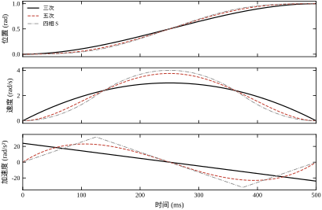
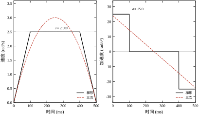
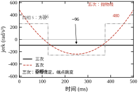
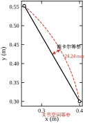
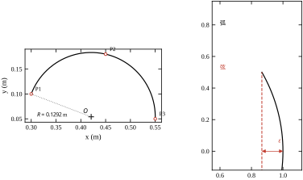
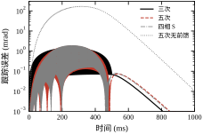
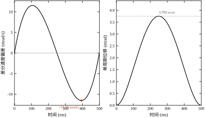
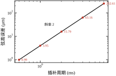
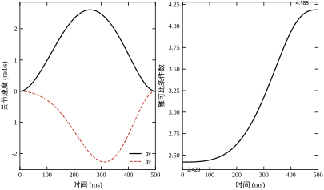
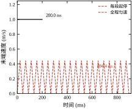

第 96 章把“给定位形下要出多大力矩”算清楚了，但整章都建立在一个没有交代的前提上：参考轨迹 q_d(t) 已经给定。本章回答它从哪来。
这个问题的分量常被低估。同样从 A 点到 B 点，控制器看到的只是一串数字，但这串数字的峰值速度决定要不要换更大的电机，峰值加速度与 jerk 决定机械件会不会叫、会不会松，插补周期决定末端留下多大的几何台阶。三件事都能算出具体数字，而且互相牵制：想更平滑，峰值就得抬高；想更准，插补就得加密；想更快，加速度就得加大。轨迹规划的本质是这笔三角账。
一句话概括本章的立场：轨迹规划不是在两点之间插一条光滑曲线，而是在节拍、能量、精度三个约束之间做取舍；插补不是把曲线画得更细，而是把连续的时间切成控制器能执行的离散节拍。 规划决定“走哪条曲线”，插补决定“这条曲线怎么被采样成 1 ms 一格的数字”。
设一个关节要从 0 走到 1 rad，时间 0.5 s。这个要求本身不构成一条轨迹——满足“0 时刻在 0、0.5 s 在 1”的曲线有无穷多条。
工程上最常用的三条：
三条轨迹的终点完全一样，起点速度与终点速度都为零。把位置曲线叠在一起，肉眼几乎分不出差别。差别全在一二阶导上：三次的峰值速度 3.000 rad/s、峰值加速度 24.000 rad/s²；五次是 3.750 与 23.094；四相 S 是 4.000 与 32.000。速度峰值差 33%，加速度峰值也差 33%。
这就是本章的第一条经验：平滑度不是免费的，它要用峰值换。三次的位置曲线已经连续、速度曲线也连续，但加速度在起点从 0 跳到 24.000 rad/s²——这个跳变在机械上就是一次冲击，齿隙会被敲响，螺丝会被震松。五次把这个跳变挪到了 jerk 上，代价是速度峰值抬高 25%、jerk 峰值达到 480 rad/s³。四相 S 把 jerk 也压住了，代价是速度峰值再抬到 4.000、加速度抬到 32.000。
第一个数：3.000 与 4.000。同一段 1 rad、0.5 s 的行程，三次的峰值速度是 3.000 rad/s，四相 S 是 4.000 rad/s。若驱动器额定转速折算到关节侧只有 3.0 rad/s，那么三次刚好卡在边界上，四相 S 直接超速 33%。这不是“选个更好看的曲线”的问题，是选完曲线之后电机可能不够。
第二个数：−96 与 480 与 256。这是三条轨迹的 jerk 峰值（rad/s³）。三次的 jerk 是 −96 的常数——注意“常数”不等于“小”：它全程恒定，意味着加速度从 +24 线性降到 −24，而在 t=0 与 t=T 两个端点，jerk 从 0 突跳到 −96 再突跳回 0。五次的 jerk 峰值 480，出现在两端；四相 S 的 jerk 是 ±256 的方波。力矩变化率约等于 M_{11} 乘 jerk：在本章算例里 \Delta=0.5 rad 时，五次的 d\tau/dt\approx94.00 N·m/s，四相 S 是 50.13 N·m/s，三次在起止处是无穷大（阶跃）。减速器能承受的是力矩变化率，不是力矩本身，这一条在选型时经常被漏掉。
第三个数：3.750 mrad 与 1.500 mm。五次轨迹用 1 ms 插补，单周期最大位移 3.750 mrad；在 0.40 m 的杆长处，这等于末端每毫秒跳 1.500 mm。插补器给出的是一串离散点，伺服环把它们连成阶梯，阶梯的台阶高度就是这个数。台阶必须由伺服环在一个周期内吃掉，吃不掉就变成跟踪误差。插补周期不是“采样得细一点更保险”的选项，它直接决定了末端台阶的高度。
轨迹规划里同时有四个空间，混用是大部分符号错误的来源。
关节空间：坐标是 q\in\mathbb{R}^n，轨迹写成 q(t)。这是控制器唯一认识的空间，第 96 章的计算转矩法直接吃它。优点是永不奇异、永远可执行；缺点是末端走出来的形状不受控。
笛卡尔空间（任务空间）：坐标是末端位姿 p\in\mathbb{R}^m。工艺要求通常在这里提出——焊缝要直、涂胶要匀、切割面要平。缺点是必须过逆解，而逆解可能无解、多解、在奇异附近病态。
路径参数空间：坐标是一个标量 s\in[0,1]，把几何形状与时间进度分开。p(s) 或 q(s) 只管“走哪条线”，s(t) 只管“什么时候走到哪”。这是插补器的核心架构：几何一改只动 p(s)，节拍一改只动 s(t)，两者互不干扰。
时间：t 本身。所有“速度、加速度、jerk”都是对 t 求导，不是对 s 求导。这一点在小线段拼接时最容易错：对 s 的二阶导有界，不代表对 t 的二阶导有界——中间差着 \dot s^2 与 \ddot s 两项。
工程上把这四层拆开写成四个模块，是后面 §97.10 那套软件结构的基础。
本章只用一个算例，分两部分。
单关节部分：行程 \Delta=1.0 rad，运动时长 T=0.5 s，约束为 V_{\max}=3.0 rad/s、A_{\max}=20.0 rad/s²、J_{\max}=400 rad/s³。所有轨迹族都在这同一组数上比，峰值才有可比性。
两连杆部分：沿用第 96 章的平面两连杆（0.40 m + 0.30 m，2.0 kg + 1.5 kg，50:1 减速，控制周期 1 ms）。起点位形 (0^\circ,90^\circ)，终点 (40^\circ,60^\circ)，对应末端 p_0=(0.4000,0.3000)、p_1=(0.2543,0.5526)，直线长 0.2916 m。圆弧算例取三点 (0.30,0.10)、(0.45,0.18)、(0.55,0.05)，定出半径 0.1292 m。前瞻算例取 20 段 10 mm 的小线段，总长 0.20 m。
所有读数由 code/ch097_sim.py 一次跑出，分 15 段 [0]–[14]，索引在 §97.12.3。正文里每个数字都能指回某一段。
§97.2 把五种轨迹族的数学写清楚，给出峰值公式与无量纲表，再把直线、圆弧、曲率限制与前瞻的账算完。§97.3 给出十步设计流程，从定节拍一路走到验收。§97.4 讨论连续域，重点是前馈为什么能把跟踪误差压到 94.3 分之一。§97.5 讨论离散域，1 ms 采样留下多少台阶、多少相位。§97.6 把饱和、跟踪、轮廓、关节速度放大放在一起。§97.7 逐个参数讲意义，§97.8 讲现场怎么选，§97.9 讲优化，§97.10 讲落地，§97.11 讲边界，§97.12 交代码。
本章只讲“参考轨迹与插补”这一层，四件事明确外包：
另外三处容易与本章混淆的内容也一并指回：PID 的整定在第 44 章与第 106 章；Smith 预估在第 47 章与第 107 章；这两者都是“给定轨迹之后怎么跟”的问题，不是“轨迹怎么来”的问题。本章统一用 s 表示路径参数，\tau 表示归一化时间，T 表示运动总时长，T_s 表示插补周期。
六个约定先讲清楚，后面不再重复。
第一，轨迹一律写成 \Delta\cdot f(t/T) 的形式。f 是无量纲形状函数，f(0)=0、f(1)=1。这样“哪种曲线更陡”只看 f'，“行程多大”只看 \Delta，两件事不搅在一起。
第二，时间用 \tau=t/T 归一化。所有峰值公式都写成“系数 \times\ \Delta/T^k”，系数是纯数，与行程、时长无关。
第三，“路径”只有几何，“轨迹”含时间。说“直线路径”时不涉及速度；说“直线轨迹”时必须交代 s(t)。
第四，插补周期与控制周期在本章视为同一个 1 ms。实际系统里插补器常比伺服环慢一档（例如插补 4 ms、伺服 0.5 ms），那时插补器内部还要再做一次细分；本章不展开，只把“插补周期”当成末端轨迹的采样间隔。
第五，jerk 指位置的三阶导，单位 rad/s³。力矩的变化率另写 d\tau/dt，单位 N·m/s，两者差一个惯量。
第六，“峰值”一律指绝对值最大值，不区分正负。三次的加速度峰值是 24.000，端点处是 +24.000 与 -24.000，都算。
误区一：位置阶跃也能“走”。 很多调试现场直接给目标位置一个阶跃，看电机“跟上去了”，就认为轨迹没问题。实际上位置阶跃意味着速度无穷大，驱动器必然限流，真实响应是一条被限幅切出来的斜坡，斜率由电流上限决定，而加速度在斜坡两端仍是跳变。阶跃不是“快”，是把规划该做的事交给了饱和环节去做，结果既不可预测也不可复现。
误区二：插补点越密越准。 插补周期只影响两件事：弦高误差与差分速度误差。它不改变轨迹族的峰值，也不改变前馈的准确性。把 1 ms 加密到 0.5 ms，弦高从 3.95 μm 降到 0.99 μm，但峰值速度仍是 3.750 rad/s，一点没变。真正决定精度的是“曲线本身对不对”和“前馈准不准”，加密只是把量化噪声压小。
误区三：S 曲线一定更好。 S 曲线把 jerk 压住了，看起来“更高级”。但在本章算例里，同样的 0.5 s，四相 S 的峰值速度 4.000 rad/s 已经超过 3.0 rad/s 的驱动器上限；若要把速度压回 3.0，四相 S 至少需要 666.67 ms，而梯形只需 483.33 ms——慢 1.379 倍。jerk 受限是用时间换平顺，短节拍的场合它经常是错的选择。
四个空间不是并列的四个坐标系，而是两组映射的复合：一组是几何的（关节 ↔︎ 笛卡尔），一组是进度的（路径参数 ↔︎ 时间）。
关节到笛卡尔是正解 p=f(q)，笛卡尔到关节是逆解 q=f^{-1}(p)。本章算例的起点 q=(0°,90°) 对应 p_0=(0.4000,0.3000)，终点 q=(40°,60°) 对应 p_1=(0.2543,0.5526)。这两个对应关系就是正解，不需要解方程；反过来从 p_0 求 q 要解，而且可能有两组解。
路径参数到笛卡尔是 p(s)，直线时就是线性插值；笛卡尔到路径参数是“弧长参数化”，要把曲线按长度重新标注，圆弧上 s 正比于转角。这两步在插补层每拍都要做一次。
路径参数到时间是 s(t)，由曲线族给出；反过来从时间求 s 就是求值。本章的 501 个点，就是把 t_k 逐个代进 s(t) 得到的。
真正容易混的是“速度”的换算。关节速度 \dot q 有两条路可走：一条是 dq/ds\cdot\dot s（链式法则），一条是 J^{-1}(q)\dot p（雅可比反解）。两条路在数学上等价，在数值上不等价：前者依赖 dq/ds 的解析式，后者依赖雅可比矩阵是否良态。本章算例终点条件数 4.188，还不至于让两条路分家；若条件数升到几十，雅可比那条路会把误差放大，这时宁可用链式法则。
换算关系可以用一句话记住：几何管“在哪”，参数管“走到哪”，时间管“多快”，雅可比管“两者怎么接”。四者混用，符号一定乱。
把几何与时间分开，是本章全部公式的组织方式。
一条路径是映射 s\mapsto q(s) 或 s\mapsto p(s)，s\in[0,1]，s=0 在起点、s=1 在终点。一条轨迹是复合映射 t\mapsto s(t)\mapsto q(s(t))。
对时间求导要用链式法则：
\dot q=\frac{dq}{ds}\dot s,\qquad \ddot q=\frac{d^2q}{ds^2}\dot s^2+\frac{dq}{ds}\ddot s .
这两行是本章最容易出错的地方。第一，\dot q 与 \dot s 成正比，比例是路径的切向量 dq/ds，它随位置变化——这就是为什么“笛卡尔匀速”在关节空间里不是匀速。第二，\ddot q 有两项：一项来自路径弯曲（d^2q/ds^2\dot s^2，离心项），一项来自速度变化（dq/ds\ddot s，切向项）。只压住 \ddot s 不管路径曲率，加速度仍会超标。
本章后面所有“峰值公式”都是先定 s(t) 的形状，再乘上路径的几何因子。单关节算例里路径就是直线 q=\Delta s，几何因子为常数，公式最干净；笛卡尔算例里几何因子随位形变化，账就复杂了。
一条多项式轨迹能定几个条件，取决于它的阶数。n 次多项式有 n+1 个系数，也就有 n+1 个待定量，正好对应 n+1 个边界条件。
三次有 4 个系数 a_0–a_3，取起点在原点则 a_0=0，剩下 3 个待定，对应“终点位置 + 起止速度”3 个条件；加上 a_0 那个条件，一共 4 个条件，刚好定死 4 个系数。所以三次能同时满足“起止位置 + 起止速度”，但管不了加速度——加速度由剩下的系数结构决定，没有自由度再去约束它。
五次有 6 个系数，能同时满足“起止位置 + 起止速度 + 起止加速度”共 6 个条件，加速度连续，jerk 不连续。
七次才能把起止 jerk 也定住，工程上很少用：系数多了数值条件变差，而 jerk 的不连续对多数机械并不致命（只要幅值有界）。真正需要 jerk 有界时，工程上更常用的是分段常值 jerk 的 S 曲线，而不是七次多项式——因为 S 曲线的峰值有闭式解，七次没有。
取 q(0)=0、q(T)=\Delta、\dot q(0)=\dot q(T)=0，解得
q(t)=\Delta\left[3\left(\frac{t}{T}\right)^2-2\left(\frac{t}{T}\right)^3\right].
记 \tau=t/T，则 q=\Delta(3\tau^2-2\tau^3)。逐阶求导：
\dot q=\frac{\Delta}{T}\left(6\tau-6\tau^2\right),\qquad \ddot q=\frac{\Delta}{T^2}\left(6-12\tau\right),\qquad \dddot q=-\frac{12\Delta}{T^3}.
三个结论直接读出来。
速度是开口向下的抛物线，在 \tau=0.5 取峰值 1.5\Delta/T。加速度是直线，从 +6\Delta/T^2 线性降到 -6\Delta/T^2，峰值 6\Delta/T^2。jerk 是常数 -12\Delta/T^3——注意它是常数，不是零，意味着加速度全程在变，且在两端的跳变幅度就是 12\Delta/T^3。
代入 \Delta=1.0、T=0.5：a_2=12.0000、a_3=-16.0000，速度峰值 1.5/0.5=3.000 rad/s，加速度峰值 6/0.25=24.000 rad/s²，jerk -12/0.125=-96.0 rad/s³。与实跑 [1] 的系数、[0] 的峰值一致。
三次的优点是系数只有两个、计算量最小、峰值有闭式解；缺点是加速度在两端跳变，且跳变幅度随 1/T^3 增长——节拍缩短一半，jerk 跳变增大 8 倍。这就是“调快一点”之后机械开始响的原因。
再加两个条件 \ddot q(0)=\ddot q(T)=0，解出
q(t)=\Delta\left[10\left(\frac{t}{T}\right)^3-15\left(\frac{t}{T}\right)^4+6\left(\frac{t}{T}\right)^5\right],
系数 a_3=10\Delta/T^3、a_4=-15\Delta/T^4、a_5=6\Delta/T^5。代入 \Delta=1.0、T=0.5 得 a_3=80.0000、a_4=-240.0000、a_5=192.0000，与 [1] 一致。
三阶导为
\dddot q=\frac{\Delta}{T^3}\left(60-360\tau+360\tau^2\right),
这是开口向上的抛物线，两端取 +60\Delta/T^3，中间在 \tau=0.5 取 -30\Delta/T^3。代入数值：两端 60/0.125=480.0 rad/s³，中间 -240.0。峰值是 480，出现在端点，不是中间。 这一点与直觉相反：五次的 jerk 最恶劣的时刻恰恰是起步与停止的那一瞬。
速度峰值出现在 \tau=0.5：\dot q_{\max}=1.875\Delta/T=3.750 rad/s。加速度峰值不在中点（中点处 \ddot q=0），而在 \tau=(3-\sqrt3)/6\approx0.2113 处，值为
\ddot q_{\max}=\frac{10}{\sqrt3}\cdot\frac{\Delta}{T^2}=5.7735\frac{\Delta}{T^2}=23.094\ \text{rad/s}^2 .
与三次相比：速度峰值高 25%（3.750 对 3.000），加速度峰值反而低 3.8%（23.094 对 24.000）。这个“加速度略低”经常被误读成“五次更省力”，其实不对：加速度峰值低一点，但它持续的时间结构不同，且 jerk 峰值高得多。真正的账要连 jerk 一起算。
把三种轨迹的峰值公式放在一起看，会发现它们有统一形式。对任何满足“起止速度为零”的对称轨迹，
\dot q_{\max}=c_v\frac{\Delta}{T},\qquad \ddot q_{\max}=c_a\frac{\Delta}{T^2},\qquad \dddot q_{\max}=c_j\frac{\Delta}{T^3},
三个系数 c_v,c_a,c_j 只与曲线族有关，与行程、时长无关。这就是峰值定理：行程加倍，速度峰值加倍；时长减半，速度峰值加倍、加速度峰值变 4 倍、jerk 峰值变 8 倍。
| 轨迹族 | c_v | c_a | c_j | 端点加速度 | 端点 jerk |
|---|---|---|---|---|---|
| 三次 | 1.500 | 6.000 | 12.000 | 跳变 | 跳变 |
| 五次 | 1.875 | 5.7735 | 60.000 | 0 | 跳变 |
| 四相 S | 2.000 | 8.000 | 32.000 | 0 | 跳变 |
表 97-1 三种对称轨迹的无量纲峰值系数
这张表是全章最该记住的一张。它说明三件事。第一，越平滑的曲线 c_v 越大——四相 S 比三次高 33%。第二，c_a 并不单调：五次 5.7735 反而低于三次 6.000，只有四相 S 升到 8.000。第三，c_j 的差距最大：三次的 12.000 看着最小，但它是全程恒定、两端跳变的常数，实际冲击比“有界”的 60.000 更难受。
代入本章的 \Delta=1.0、T=0.5，三种轨迹的位置、速度、加速度曲线画在图 97-1 里。三条位置曲线几乎重合，速度与加速度的差别一眼可见：三次的速度峰最低、四相 S 最高；三次的加速度是斜线、在两端不归零，五次与四相 S 的加速度在两端都收回到零。

图 97-1 的纵轴刻度值得留意：加速度那一格的范围是 ±32，而三次的曲线在两端停在 ±24 的位置没有回到零——这就是“端点加速度跳变”的图形证据。
梯形速度是工业现场用得最多的一种，因为它最省峰值速度。形状是：匀加速一段、匀速一段、匀减速一段。
设加速段占总时长的比例 \alpha（对称起见减速段也是 \alpha），则匀速段占 1-2\alpha。由面积等于行程：
v_p=\frac{\Delta}{T(1-\alpha)},\qquad a_p=\frac{v_p}{\alpha T}=\frac{\Delta}{\alpha(1-\alpha)T^2}.
本章取 \alpha=0.20、\Delta=1.0、T=0.5：v_p=1/(0.5\times0.8)=2.5000 rad/s，a_p=2.5/(0.1)=25.0000 rad/s²。加速段 100.0 ms、匀速段 300.0 ms、减速段 100.0 ms，与 [3] 一致。
分段表达式为
q(t)= \begin{cases} \dfrac{a_p t^2}{2}, & 0\le t<\alpha T,\\[4pt] \dfrac{a_p(\alpha T)^2}{2}+v_p(t-\alpha T), & \alpha T\le t<T-\alpha T,\\[4pt] \Delta-\dfrac{a_p(T-t)^2}{2}, & T-\alpha T\le t\le T . \end{cases}
与三次对比（图 97-2）：梯形速度峰值 2.5000，是三次 3.000 的 0.833 倍；加速度峰值 25.0000，是三次 24.000 的 1.042 倍。梯形用略高的加速度换来了低 17% 的速度峰值，这个交换在“电机转速不够、力矩有余”的场合非常划算。

代价在加速度曲线上：梯形是三个常值段，在 t=\alpha T、t=T-\alpha T 两处加速度从 +a_p 跳到 0、从 0 跳到 -a_p，再加上起步与停止两次，一共四次跳变，每次幅度 25.0000。三次只有两次跳变，幅度 24.000，但方向相反且 jerk 全程恒定。哪个更“伤”机械，取决于结构的高频特性——这也是为什么有些产线用梯形反而比三次安静。
\alpha 的选择是一笔明确的账。\alpha\to0 时 v_p\to\Delta/T、a_p\to\infty，退化成方波速度；\alpha\to0.5 时 v_p\to2\Delta/T、a_p\to 4\Delta/T^2，退化成三角形速度（无匀速段）。本章取 0.20 是工程折中：加速段够长，加速度不至于过高，又留出 60% 的匀速时间。
完整的 S 曲线有七段（加加速、匀加速、减加速、匀速、加减速、匀减速、减减速）。当匀速段与匀加速段都退化掉，只剩四个 jerk 常值段，就是本章用的四相形式。它的好处是峰值有闭式解，坏处是没有匀速段，速度峰值最高。
四相各占 t_j=T/4，jerk 依次为 +J,-J,-J,+J。由对称性与终点条件可解出
J=\frac{32\Delta}{T^3},\qquad A=\frac{8\Delta}{T^2},\qquad V=\frac{2\Delta}{T}.
代入 \Delta=1.0、T=0.5：J=256.0 rad/s³、A=32.000 rad/s²、V=4.000 rad/s，与 [0]、[2] 一致；t_j=125.00 ms，总时长 500.00 ms。
分段位置可以写成（记 u 为各相内的局部时间）
q=\begin{cases} \dfrac{J u^3}{6}, & 0\le t\le t_j,\\[6pt] q_1+v_1u+\dfrac{A u^2}{2}-\dfrac{J u^3}{6}, & t_j<t\le2t_j,\\[6pt] \dfrac{\Delta}{2}+Vu-\dfrac{J u^3}{6}, & 2t_j<t\le3t_j,\\[6pt] \Delta-\dfrac{J u^3}{6}, & 3t_j<t\le4t_j, \end{cases}
其中 q_1=Jt_j^3/6、v_1=Jt_j^2/2=V/2，第四相用了对称性 q(t)=\Delta-q(T-t) 收尾，保证终点严格等于 \Delta。本章代码就是这样实现的：用对称性代替第四相的显式积分，终点值不是“算出来接近 1”，而是结构上就等于 1。实跑 [2] 的终点 q=1.000000、\dot q=0、\ddot q=0，三个数同时归位。
jerk 的形状画在图 97-3 里，同时叠上三次与五次。

这张图把三条曲线的“冲击结构”讲清楚了。三次是 −96 的一条水平线：jerk 本身不大，但它在 t=0 与 t=T 各跳一次，从 0 到 −96 再回 0。五次是两端 +480、中间 −240 的抛物线：幅值最大，但在两端是连续的（抛物线在端点取极值，两侧延伸出去仍连续），真正的跳变发生在 jerk 的导数上。四相 S 是 ±256 的方波：幅值适中，跳变四次，但每次都是有限值。
工程判断的落点是“力矩变化率”，不是 jerk 本身。第五节的账：\Delta=0.5 时五次 j=240.0、d\tau/dt\approx94.00 N·m/s；四相 S j=128.0、50.13 N·m/s；三次在端点无穷大。若减速器的允许力矩变化率是 60 N·m/s，那么五次不合格、四相 S 合格、三次根本不该用。
直线插补的目标是让末端沿 p_0 到 p_1 的线段走，且通常要求沿线速度可控。
最简单的参数化是等参：
p(s)=p_0+s\,(p_1-p_0),\qquad s\in[0,1].
s(t) 用上一节的任意一种曲线，\dot p=\dot s\,(p_1-p_0)，方向恒定、大小随 \dot s 变化。关节速度由雅可比反解：
\dot q=J^{-1}(q)\,\dot p=J^{-1}(q)\,\dot s\,(p_1-p_0).
这一步是笛卡尔插补的全部代价：每一拍都要做一次逆解与一次 2\times2 线性求解（六轴时是 6\times6）。本章算例 501 个插补点，每点一次逆解，计算量可以忽略；但在 1 kHz、六轴、带奇异保护的场合，这一步就是 §97.10 里“时间片预算”的主要支出。
另一种做法是“关节空间等参”：把关节角也线性插值，q(s)=q_0+s(q_1-q_0)，末端位置由正解算出。它省掉了逆解，但末端不走直线。本章算例的偏离量是 24.242 mm，相对行程 8.315%（图 97-4）。

这个数值得记住：在 0.2916 m 的行程上偏 24 mm，是 8.3% 的路径误差，任何要求“走直线”的工艺都不能接受。同时注意另一个数：关节速度峰值几乎没变（笛卡尔 2.606 对关节空间 2.618 rad/s）。也就是说，关节空间等参既没省下速度，又丢掉了直线——它唯一的优点是省计算，而计算在今天通常不是瓶颈。
偏离量可以用二阶项估计。把 q(s) 线性插值代入正解，泰勒展开后偏离正比于 d^2p/ds^2，而
\frac{d^2p}{ds^2}=\frac{d}{ds}\left(J\frac{dq}{ds}\right) =\frac{dJ}{ds}\frac{dq}{ds}+J\frac{d^2q}{ds^2},
在线性插值下第二项为零，偏离完全来自 dJ/ds\cdot dq/ds——雅可比沿路径变化得越快，偏离越大。本章算例的起点条件数 2.420、终点 4.188（[5]），说明路径穿过了雅可比变化较快的区域，24 mm 的偏离不奇怪。
三点定圆是圆弧插补的入口。给定 P_1,P_2,P_3，圆心 (u_x,u_y) 由线性方程组解出：
u_x=\frac{(x_1^2+y_1^2)(y_2-y_3)+(x_2^2+y_2^2)(y_3-y_1)+(x_3^2+y_3^2)(y_1-y_2)}{2\,[x_1(y_2-y_3)+x_2(y_3-y_1)+x_3(y_1-y_2)]},
u_y 把 x 与 y 互换即得，分母相同。本章算例三点 (0.30,0.10)、(0.45,0.18)、(0.55,0.05)，解出圆心 (0.4208,0.0541)、半径 0.1292 m、扫角 −161.01°（负号表示顺时针）。三个半径核对值都是 0.129247 m，与圆心解自洽。
有了圆心与半径，轨迹就是 \theta(t)=\theta_0+\omega t，
p(\theta)=\big(u_x+R\cos\theta,\ u_y+R\sin\theta\big).
离散化把圆弧切成弦，弦与弧之间的最大距离叫弦高：
\varepsilon=R\left(1-\cos\frac{\Delta\theta}{2}\right)\approx\frac{R\,\Delta\theta^2}{8}.
弦高按 \Delta\theta^2 增长，而 \Delta\theta=\omega T_s，所以弦高按 T_s^2 增长。 这个平方关系是后面所有“插补周期怎么选”的依据。
本章算例：T_s=1 ms、圆频率 0.5 Hz 时，每周期转角 0.1800°，弦高 0.247 μm；频率提到 2 Hz，每周期 0.7200°，弦高 3.948 μm。频率翻 4 倍，弦高翻 16 倍，正好是平方关系（0.247×16=3.95）。

图 97-5 右图是弦高的几何示意，角度被放大了——真实的 0.72° 在图上只有一个像素，看不出差别，但它乘上半径就是 3.948 μm 的实际偏差。
直线与圆弧的差别在曲率。曲率为 \kappa、速度为 v 时，法向加速度是
a_n=\kappa v^2=\frac{v^2}{R}.
若法向加速度上限为 a_{n,\max}，则速度必须满足
v\le\sqrt{a_{n,\max}R}.
本章算例 R=0.20 m：a_n=2.0 m/s² 时 v\le0.632 m/s（0.503 Hz）；a_n=5.0 时 1.000 m/s（0.796 Hz）；a_n=10.0 时 1.414 m/s（1.125 Hz）。注意速度上限按 \sqrt{a_n} 增长：把允许的向心加速度提高 5 倍，速度只提高 2.24 倍。
这条限制在多段路径拼接处更关键。两段直线以夹角 \phi 相接时，若不停顿，拐角处的速度方向要在一两个插补周期内转过来，等效曲率极大，必须提前减速。工程上的判据是“拐角速度”，把允许的法向加速度折算成衔接点的速度上限：
v_{\text{corner}}\le\sqrt{\frac{a_{n,\max}\,\delta}{2\sin(\phi/2)}},
其中 \delta 是允许的拐角圆角半径。本章不展开多段拼接的完整算法（那是 §97.9 前瞻的内容），但这条式子说明了为什么“小线段 + 前瞻”能做到既不停顿又不超加速度。
把一条由 N 段小线段组成的路径走完，两种极端策略的时间差可以用一个三角形速度曲线算清。
单段长 L、允许加速度 a、允许速度 v_{\max}，若每段都起停，段内峰值速度受 \sqrt{aL} 限制（三角形速度，加速到峰值再减速），单段耗时
t_{\text{one}}=2\sqrt{\frac{L}{a}}\quad\left(\text{当 }\sqrt{aL}\le v_{\max}\right).
N 段总时间 N t_{\text{one}}，正比于 N\sqrt{L}=N\sqrt{L_{\text{tot}}/N}=\sqrt{N L_{\text{tot}}}——段数越多，起停策略越吃亏，按 \sqrt N 恶化。
若全程不停顿、以 v_{\max} 匀速走，总时间 L_{\text{tot}}/v_{\max}，与段数无关。
本章算例：L=10 mm、a=20 m/s²、v_{\max}=1.0 m/s，\sqrt{aL}=0.447 m/s <1.0，故 v_{pk}=0.447 m/s，单段 44.72 ms，20 段共 894.43 ms；全程匀速 200.00 ms。比值 894.43/200.00=4.472。
这个比值有闭式：把两式相除，N 与 L 都约掉，
\frac{t_{\text{stop}}}{t_{\text{cont}}}=\frac{2v_{\max}}{\sqrt{aL}} .
代入 2\times1.0/\sqrt{0.2}=4.472。注意比值只与“v_{\max} 与 \sqrt{aL} 之比”有关，与段数无关——段数越多，两种策略的绝对时间都越长，但比例不变。本章这组参数下 4.472 恰好等于 \sqrt{20}，纯属数值巧合，不要当成规律。
前瞻的全部价值就在这 4.472 倍里。它做的事只有一件：把“每段都减速到零”改成“只在必要的地方减速”，其余地方保持高速通过。
前面五种轨迹都只处理“两点之间”。真实路径往往有几十个示教点，逐段用三次多项式拼，接缝处的加速度会跳；用五次拼，接缝处的 jerk 会跳。要在接缝处也保持连续，就得用样条。
三次 B 样条是最常用的形式。给定 n+1 个控制点 P_0,\dots,P_n，曲线写成
p(u)=\sum_{i=0}^{n}N_{i,3}(u)P_i ,
其中 N_{i,3} 是三次基函数，每个只在一段局部区间内非零。这个“局部支撑”是 B 样条最重要的性质：改一个控制点，只影响相邻的四段，其余部分不动。多项式拼接做不到这一点——改一段的系数，接缝条件要全部重解。
B 样条的两个代价要说清楚。
第一，曲线不过控制点。控制点像“磁铁”，把曲线吸过去但不穿过。要让曲线过点，得反解控制点，或者用重节点把端点钉住。本章的多项式轨迹天然过端点，B 样条不天然。
第二，参数化影响形状与速度。同一组点，按均匀参数、弦长参数、向心参数给出的曲线不同。弦长参数让每段的参数增量正比于段长，速度更均匀；向心参数在急转弯处更稳，不易自交。工程上默认用向心参数，原因就在“急转弯”这三个字上。
样条与本章的峰值公式并不冲突。做法是先按弧长把样条参数化，得到 s 与 p(s)，再在 s 上套用三次、五次或 S 曲线的 s(t)。这样“形状”与“节拍”仍然分开，§97.2.1 的链式法则照常适用，只是 dq/ds 由样条给出，不再是常数。
有一点必须提醒：样条的 d^2q/ds^2 在接缝处虽然连续，但幅值可能很大。曲率大的地方，同样的 \dot s 会产生更大的法向加速度，这就是 §97.2.10 的曲率限制。所以样条不是“更光滑所以更快”，它只是把不连续挪到了更高阶，速度仍要按曲率逐点限制。
时域看峰值，频域看激励。这两件事经常给出不同的结论。
把 jerk 看成激励信号，三条轨迹的频谱形状差别很大。三次的 jerk 是常数 −96 加两端的阶跃，阶跃含全频段分量，但幅值只有 96；五次的 jerk 是抛物线，两端 480、中间 −240，能量集中在低频，高频衰减快；四相 S 的 jerk 是 ±256 的方波，方波的频谱是 sinc 形，第一个零点在 1/(T/4)=4/T。
本章 T=0.5 s，四相 S 的 jerk 基频是 8 Hz。这个数很关键：若机械的第一个共振峰落在 8 Hz 附近，四相 S 的方波恰好把能量灌进去，而它的 256 幅值比方波的三次（96）高 2.67 倍。这时“更平滑”的 S 曲线反而比三次更容易激起共振。
这不是否定 S 曲线，而是说明“平滑”要看对谁平滑。S 曲线压住的是端点冲击（时域指标），代价是把能量集中到了几个离散频率上（频域代价）。三次的阶跃虽然含全频段，但每个频点的能量都小；对宽带阻尼大的结构，三次反而更温和。
工程上的判断顺序应该是：先测结构的共振峰，再看轨迹的 jerk 频谱，最后决定选哪一族。跳过第一步直接选“最平滑”的，等于闭着眼睛买鞋。
相平面是 (q,\dot q) 平面，轨迹在平面上画出一条曲线，曲线下方的面积就是时间。
梯形的相平面最好认：加速段是一条抛物线（q\propto\dot q^2），匀速段是水平线，减速段是另一条抛物线。本章梯形 a_p=25.0000、v_p=2.5000，加速段从 (0,0) 到 (0.125,2.5000)，匀速段走到 (0.875,2.5000)，再减速回 (1,0)。
时间最优的相平面轨迹有一个明确的形式：从起点以 +A_{\max} 沿抛物线爬升，到某个切换点后以 -A_{\max} 沿另一条抛物线下降，两条抛物线的交点就是最高速度。这个 bang-bang 结构在相平面上是两条曲线的拼接，没有任何圆角。
四相 S 的相平面多了一段：加速度不能瞬间建立，要从 0 斜升到 A，于是抛物线在起点处被“削圆”。这段圆角对应的时间就是 t_j。本章 t_j=125.00 ms，四段共 500 ms；梯形只用 100 ms 加速、300 ms 匀速、100 ms 减速，总 500 ms——同样的时间，S 曲线把更多时间花在“建立加速度”上，所以最高速度被迫抬高到 4.000 才能走完同样的面积。
相平面把“为什么越平滑越慢”讲得最清楚：圆角占了面积，面积就是时间；要补回面积，只能抬高速度，而速度又有上限。三者一卡，慢就是必然的。
把 §97.2 的公式收成四句话，后面各节反复用。
第一，峰值只与 (\Delta,T) 和曲线族有关。 三个系数 c_v,c_a,c_j 是曲线的指纹，与行程、时长无关。选曲线就是选这三个数。
第二，平滑度与峰值速度互换。 c_v 从 1.5 涨到 2.0，换来的是 c_j 从“跳变”变成“有界”。没有免费的平滑。
第三，几何误差按插补周期的平方走。 弦高 \propto T_s^2，这就是为什么 1 ms 到 2 ms 弦高变 4 倍（3.95 → 15.79 μm），而 1 ms 到 0.5 ms 只降到四分之一（0.99 μm）。
第四，笛卡尔与关节空间不可兼得。 要末端走直线，就必须每拍逆解并承担奇异风险；要省计算，就得接受 8.315% 的路径偏离。二者之间没有中间道路，只有“用更密的插补把偏离压小”——但偏离是几何的，加密插补压不下去。
一条真实路径由多段组成，段与段的接缝是全部麻烦的来源。
连续性分三阶：位置连续叫 C^0，速度连续叫 C^1，加速度连续叫 C^2。三种连续对应的物理含义完全不同：C^0 断了是“跳”，机械会撞；C^1 断了是“拐”，速度方向突变，需要无穷大加速度；C^2 断了是“顿”，加速度突变，表现为冲击。
本章的 20 段直线是同向拼接，接缝处速度方向不变，所以只要速度大小连续，C^1 就成立。这是它能“不停顿”通过的根本原因——不是前瞻算法聪明，是几何本身没有拐角。
直线接圆弧就不同了。接缝处切向从一个方向突然转到另一个方向，C^1 断了。若硬要保持速度，接缝点的法向加速度趋于无穷，物理上不可实现。所以必须做三件事之一：减速到零、插入过渡圆弧、或插入样条过渡段。
三种做法的代价可以排序。减速到零最简单，但每个接缝都吃掉一次起停的时间，20 段就是 §97.2.11 的 4.472 倍；过渡圆弧最平滑，但圆弧半径受限于相邻段的长度，短段插不进去；样条过渡最灵活，但曲率不连续，二阶导仍有跳变。
工程上的默认顺序是：先看两段夹角，小于阈值就按“同向”处理（允许全速通过，接受微小偏差）；大于阈值就插过渡段；过渡段也插不进去时，才减速。这个阈值不是拍脑袋，它由 §97.2.10 的拐角判据给出，夹角越大，允许速度越低。
有一条容易忽略的细节：C^2 连续的拼接不一定更好。把每段都做成五次、接缝处强制 C^2，会让整条曲线“发软”，拐角被抹圆，实际路径偏离编程路径。对于要求“贴边”的工艺（例如铣削内角），宁可要 C^1 的硬拐角加降速，也不要 C^2 的圆滑偏离。
现场最常见的两种做法，一种是把曲线族按“高级程度”排序，默认五次比三次好、S 曲线比五次好，于是选了最平滑的那条；另一种是把插补周期按“细一点更保险”排序，默认 1 ms 一定够，甚至上 0.5 ms。两种做法在本章算例里都会翻车。
第一种翻车在速度上：五次在 T=0.5 s 时的速度峰值是 3.750 rad/s，比 3.0 rad/s 的上限高 25%；四相 S 更高，4.000 rad/s，高 33%。第二种翻车在几何上：1 ms 插补在 2 Hz 的圆弧上留下 3.948 μm 弦高，如果工艺要求 1 μm，1 ms 就不够，得压到 0.5 ms（0.99 μm）。
流程的价值不在于“更正规”，而在于把每一步的输入、输出、判据钉死。超速了，能立刻回答是第二步选错了族，还是第一步的节拍压得太狠；精度不够，能立刻回答是第六步的周期太长，还是第七步的半径算错了。下面十步，每步只做一件事。
节拍 T 不是控制问题，是工艺问题。它等于总循环时间减去取放、开门、夹紧、检测这些不归轨迹管的时间，再按“加速段不能太短”打一个折扣。
本章取 T=0.5 s，对应每分钟 120 次。这个数一旦定下，后面所有峰值都按 1/T、1/T^2、1/T^3 放大：从 0.5 s 压到 0.25 s，速度峰值翻倍、加速度峰值变 4 倍、jerk 峰值变 8 倍。节拍是整条链上最贵的参数，它一改，电机、减速器、机架刚度可能全要重选。
所以第一步的产物不是一条轨迹，而是一个区间：T 的可行范围。若第三步算出的峰值在 T=0.5 时已经超限，要么放宽节拍，要么换更大的电机，没有第三条路——把曲线换得更“高级”只会让峰值更高。
选族的依据只有一个：机械能承受多大的 jerk，或者说多大的力矩变化率。
这个判据经常被漏掉，因为它不出现在电机样本上，而出现在减速器的许用值里。本章算例的账在 §97.2.7 已经算过：\Delta=0.5 时，五次的 d\tau/dt\approx94.00 N·m/s，四相 S 是 50.13 N·m/s，三次在起止处是阶跃（无穷大）。若减速器许用 60 N·m/s，五次的 94.00 不合格，四相 S 的 50.13 合格，三次不该用。
三个族各有明确的适用面。
这张单子与表 97-1 是同一件事的两种说法：表给系数，单子给场合。
把 \Delta、T 与表 97-1 的系数代进去，得到三个峰值：速度、加速度、jerk。这一步纯算术，但必须用同一组 (\Delta,T)，否则族与族之间不可比。
本章 \Delta=1.0、T=0.5：三次 3.000 / 24.000 / −96；五次 3.750 / 23.094 / 480；四相 S 4.000 / 32.000 / 256。三组数排在一起，第一眼能看出的规律是速度单调上升、加速度不单调、jerk 的“形态”比“数值”更重要。
这一步还要顺手算两个派生量。一是加速度峰值对应的力矩：M_{11}=0.3917 kg·m²，五次在 \Delta=0.5 时的峰值加速度 11.547 rad/s²，加速力矩 4.52 N·m，加上重力项 G_1=9.81 N·m，合计 14.33 N·m。二是 jerk 对应的力矩变化率，即 M_{11} 乘 jerk，前面已经算过。
把第三步的峰值与驱动器的三个上限逐项比。本章的上限是 V_{\max}=3.0 rad/s、A_{\max}=20.0 rad/s²、J_{\max}=400 rad/s³。
三个约束没有一条能全过，这是本章算例刻意设的局面：它说明“给定节拍下的最优族”往往不存在，必须回头调节拍或换硬件。实际设计里更常见的是三条中过两条，然后用第五步反解出“过第三条所需的最短时长”。
这里有一个容易误判的地方：五次加速度峰值 23.094 只比三次的 24.000 低 3.8%，看着“更省力矩”，但它的速度高 25%、jerk 高 5 倍。选型时如果只盯加速度一项，就会得出“五次更省”的反结论。
第四步不合格时，不要凭感觉把 T 加长，而是由每个约束反解出各自要求的最短时长，取最大值。
对四相 S，三个约束分别给出
T\ge\left(\frac{32\Delta}{J_{\max}}\right)^{1/3},\qquad T\ge\frac{2\Delta}{V_{\max}},\qquad T\ge\sqrt{\frac{8\Delta}{A_{\max}}} .
代入本章的数：jerk 要求 430.89 ms、速度要求 666.67 ms、加速度要求 632.46 ms，取最严的 666.67 ms。限制项是速度，不是 jerk——这与“S 曲线是为 jerk 而生”的印象相反。原因是四相 S 没有匀速段，速度峰值系数 2.000 是五种族里最高的，速度先撞线。
同一组约束下，四族的最短时长分别是：梯形 483.33 ms、三次 547.72 ms、五次 625.00 ms、四相 S 666.67 ms。越平滑越慢，这条链在四个数上排得整整齐齐。本章取的 T=0.5 s 是梯形最短时长的 1.034 倍，也就是说这个节拍本来就是按梯形定的，选更平滑的族必然超限。
插补周期不能凭“1 ms 够用”定，要从几何精度反推。圆弧的弦高是
\varepsilon\approx\frac{R\,\Delta\theta^2}{8},\qquad \Delta\theta=\omega T_s ,
给定允许弦高 \varepsilon_{\max}，每周期允许转角 \Delta\theta\le\sqrt{8\varepsilon_{\max}/R}，于是
T_s\le\frac{1}{\omega}\sqrt{\frac{8\varepsilon_{\max}}{R}} .
本章算例 R=0.1292 m、圆频率 2 Hz（\omega=12.566 rad/s），若要求 \varepsilon_{\max}=1 μm，则 \Delta\theta\le\sqrt{8\times10^{-6}/0.1292}=7.87 mrad =0.451°，T_s\le0.451/720=0.626 ms。所以 1 ms 不够，得选 0.5 ms。
反过来，如果工艺只要求 10 μm，同样的半径允许 T_s\le1.98 ms，1 ms 就有两倍余量。插补周期是算出来的，不是拍的。
周期定下后，把弦高与“单周期位移”两个数都算出来。前者是几何误差，后者是伺服环每个周期要吃掉的位置增量。
本章 2 Hz 圆弧的弦高随周期变化：0.5 ms 时 0.99 μm、1 ms 时 3.95 μm、2 ms 时 15.79 μm、4 ms 时 63.16 μm、8 ms 时 252.61 μm。周期翻倍，弦高翻 4 倍，这是 §97.2.15 第三条不变量的直接体现。
单周期位移在五次轨迹的中点取最大：3.750 mrad。乘上 0.40 m 的杆长，末端每毫秒跳 1.500 mm。这个台阶必须在一个控制周期内被伺服环吃掉，若伺服环的带宽不足以跟踪 1.5 mm/ms 的斜坡，误差就会累积成滞后。弦高与台阶是两笔账：前者是“路径弯了”，后者是“节拍太粗”，不能互相抵消。
笛卡尔空间匀速，不等于关节空间匀速。本章算例的直线长 0.2916 m、T=0.5 s，末端速度 0.583 m/s；若按“末端速度除以 0.40 m 杆长”粗估，关节速度约 1.458 rad/s，而实跑的峰值是 2.606 rad/s，高出 79%。
放大倍数由雅可比决定。起点条件数 2.420、终点 4.188，路径穿过雅可比变化较快的区域；关节速度峰值 2.606 rad/s、均值 1.219 rad/s，峰均比 2.137。选电机时要按 2.606 选，不是按 1.219 选，否则一半行程都在超速边缘。
这一步还要检查奇异：终点条件数 4.188 还算健康，若路径再往前伸 20 mm，条件数会迅速上升，逆解出的关节速度可能翻几倍。这时要么改路径，要么降速，要么换构型。
前馈的配置只有一句话：把规划轨迹的位置、速度、加速度三路全部送进控制器，而不是只送位置。本章算例的账很清楚：五次轨迹只送位置时，峰值跟踪误差 166.886 mrad、RMS 77.689 mrad；三路全送后降到 1.769 与 0.479 mrad，压到 94.3 分之一。这一步的细节在 §97.4。
验收要交四张表，缺一张都不算完。
四张表都过，轨迹才算可用。任何一张不过，回到对应那一步改参数，不要在后面用“调增益”去补——增益补不了几何误差，也补不了超速。
十步不必每次从头推，熟悉之后可以逆着走：先看现状哪里超，再回到对应那一步。用本章的数演示一遍。
第一步，T=0.5 s 已定；第二步，若机械对冲击敏感，选四相 S；第三步，算得 4.000 / 32.000 / 256；第四步，速度 4.000 超 3.0 的 33%，加速度 32.000 超 20.0 的 60%，两项不合格。
第五步反解：jerk 要 430.89 ms、速度要 666.67 ms、加速度要 632.46 ms，取 666.67 ms。结论很直接——在 T=0.5 s 下四相 S 不可用，要么把节拍放到 666.67 ms，要么换族。
回头选五次：3.750 / 23.094 / 480。速度超 25%，加速度超 15.5%，jerk 超 20%，三项都不合格，但都超得不多。反解出的最短时长是 625.00 ms，比四相 S 的 666.67 ms 短 41.67 ms。
再选三次：3.000 / 24.000 / −96。速度刚好卡线，加速度超 20%，jerk 幅值合格但两端是阶跃。最短时长 547.72 ms。
最后梯形：2.5000/25.0000，速度合格、加速度超 25%，最短 483.33 ms。本章这组约束下，没有一族能在 0.5 s 内全过；若必须保 0.5 s，就得把 V_{\max} 提到 4.0 以上或把 A_{\max} 提到 32.0 以上，这是硬件问题，不是规划问题。
第六到第八步按第六步算出的周期走：若 T_s=1 ms，弦高 3.95 μm、单周期位移 3.750 mrad（末端 1.500 mm）；若要求 1 μm，则压到 0.5 ms，弦高 0.99 μm，代价是计算量翻倍。
第九步配前馈：三路齐全，误差从 166.886 mrad 降到 1.769 mrad。第十步交四张表。
这一遍走下来的结论是：十步里真正需要反复试的是第二步与第五步，其余都是算术。选族与反解时长是一对：族换了，最短时长跟着换；时长定了，能选的族又少一半。这两步之间通常要迭代两三轮。
前面只核了速度、加速度、jerk 三个约束，现场还有第四个：电机发热。
铜耗正比于力矩的平方。本章算例的重力项 G_1=9.81 N·m，五次在 \Delta=0.5 时的加速力矩 4.52 N·m，两者相加 14.33 N·m。匀速段只有重力，加速段是重力加惯性，两段的力矩平方比是
\frac{14.33^2}{9.81^2}=\frac{205.3}{96.2}=2.13 .
也就是说，加速段的瞬时铜耗是匀速段的 2.13 倍。这个比值看着不大，但节拍一压就变脸：T 减半，加速度变 4 倍，加速力矩从 4.52 涨到 18.08，总力矩 27.89，平方比变成
\frac{27.89^2}{9.81^2}=\frac{777.9}{96.2}=8.08 .
节拍减半，加速段的铜耗涨 8 倍。 电机的热时间常数通常是分钟级，它不看你某一拍的峰值，看你一分钟内的平均。所以“能跑”和“能连续跑”是两件事：前者看峰值力矩，后者看均方根力矩。
这条约束不在 V_{\max}/A_{\max}/J_{\max} 三项里，因为它不是“能不能”的问题，是“能跑多久”的问题。选型时若只按峰值算，样机测试能过，量产连续运行会过热报警。正确的做法是把一个循环的 \tau^2 按时间加权平均，再与电机的连续额定转矩比。
本章的 14.33 N·m 是峰值，不能直接与连续额定比。要按一个循环逐段积 \tau^2 再开方：加速段是 G+M\ddot q，匀速段是 G，减速段是 G-M\ddot q，三段各占多少时间由曲线族决定。这个均方根值才是该与样本上的连续转矩对照的。同一个峰值力矩，梯形与四相 S 的均方根不同，因为两者在加速段停留的时间不同——这也是“选族”的一个隐性收益。
第 96 章的计算转矩控制器在理想模型下做三件事：用 M(q)\ddot q_{\text{ref}} 抵消惯性、用 C(q,\dot q)\dot q 抵消科氏与离心、用 G(q) 抵消重力，剩下的残差交给 K_p e+K_d\dot e 收。
如果模型完全准确、参考轨迹的三阶导有界、执行器不限幅，那么 e 应该恒为零。实际不是：本章算例用同一套模型做仿真，只把摩擦关掉，峰值误差仍有 1.416–1.894 mrad。这些误差来自三处——参考量的离散化、零阶保持的相位滞后、以及“参考加速度只送到插补周期”这一层量化。
第一，参考量的离散化。 规划器每 1 ms 给一组 (q_{\text{ref}},\dot q_{\text{ref}},\ddot q_{\text{ref}})，控制器在这 1 ms 内把它们当常值用。真实的参考量在周期内是变的，两者的差就是激励。
第二，零阶保持的相位滞后。 数字控制器把上一拍算出的力矩保持一整拍，等效延时 T_s/2=0.50 ms。这个延时在 3 Hz 处产生 0.54° 的相位滞后；频率越高，滞后越大，闭环的相位裕度被一点点吃掉。
第三，加速度的量化。 位置与速度可以由编码器与差分得到，加速度只能靠规划器给或靠微分。若只给位置，控制器就得自己差分两次，噪声被放大 1/T_s^2 倍——这正是“无前馈”情形误差高达 166.886 mrad 的原因。
把同样的五次轨迹喂给同一个控制器，只改一件事：是否把 \dot q_{\text{ref}} 与 \ddot q_{\text{ref}} 一起送进去。
无前馈时，峰值误差 166.886 mrad、RMS 77.689 mrad。这个量级已经不是“跟踪得不太好”，而是“末端位置错了 1.7°”：在 0.40 m 杆长上折合 67 mm。现场表现是起步时明显滞后、停止时冲过头，操作工会说“这条轨迹软”。
三路全送后，峰值 1.769 mrad、RMS 0.479 mrad。峰值压到 94.3 分之一，RMS 压到 162.2 分之一。 RMS 压得更狠，说明前馈不只是削掉了峰值，而是把整条误差曲线按比例压扁了。
这个比值不该被记成“前馈很厉害”，而该被记成“位置-only 的控制结构根本不该用于轨迹跟踪”。前馈不是优化项，是必要条件。
三条轨迹在同样 1 ms、同样控制器下的误差：
终点误差都是 0.000，因为运动段结束后参考值保持不变，积分项有足够时间把残差收干净。
值得注意的是排序：误差随“峰值速度”走，不随“平滑度”走。三次 1.416、五次 1.769、四相 S 1.894，比值分别是 1.000、1.249、1.338；速度峰值比值是 1.000、1.250、1.333。两组数在 0.4% 以内吻合。而加速度峰值是 24.000、23.094、32.000，五次反而最低，误差却比三次高 25%——如果误差由加速度主导，五次该最小，事实相反。
图 97-6 把四条误差曲线画在一起，纵轴取对数。

图 97-6 里有两条信息值得单独看。一是三条有前馈的曲线贴得很近，量级都在毫弧度，肉眼几乎分不开——这正说明“选哪条族”对跟踪精度的影响是二阶的，首要矛盾是“有没有前馈”。二是无前馈那条曲线高出两个数量级，且在起步与停止处各有一个尖峰，对应参考加速度的两次跳变：控制器没有加速度信息，只能用位置误差去“猜”，猜的结果必然滞后。
有人会问：既然模型是准的，前馈也是全的，为什么还剩 1.4–1.9 mrad？
三个原因，都属“结构性的”，调参调不掉。
第一，参考量在周期内是变的。控制器拿到的是一组采样值，把它当常值时，周期内的真实参考已经走远。这个差正比于 \ddot q_{\text{ref}}T_s：五次的加速度峰值 23.094 rad/s² 乘 1 ms，得 23.1 mrad/s，正是 §97.5 要讲的“单周期速度改变”。
第二，零阶保持的 T_s/2 延时。它让力矩总比参考晚半拍，误差正比于 \dot q_{\text{ref}}T_s/2。把 T_s 减半，这项误差也减半，这就是“加密插补能提高精度”的真正机制。
第三，模型误差。本章仿真把摩擦关掉了，真实系统的库仑摩擦与齿隙会产生 5–20 mrad 量级的误差，比这里的 1.8 mrad 大一个数量级。现场看到的大误差，八成不是轨迹问题，是摩擦与间隙问题——所以调轨迹之前先测摩擦。
第一，前馈是必要条件，不是加分项。 166.886 到 1.769 的 94.3 倍差距，不可能靠调 K_p、K_d 补回来；提高增益只会把误差变成振荡。
第二，误差由速度峰值主导。 三条轨迹的误差比值与速度峰值比值在 0.4% 以内吻合，说明在 1 ms 这个量级上，主要的激励是“参考量在周期内变化的速度”，而不是加速度。
第三，几何精度与跟踪精度是两笔账。 弦高由 T_s^2 决定，跟踪误差由 T_s 决定，摩擦误差与 T_s 无关。三者在验收表里必须分列，否则会出现“把弦高当跟踪误差调”的错误。
前馈不是一个开关，是一组工程选择。常见的三种给法，效果差得很远。
第一种，规划器直送三路。 本章用的就是这种：规划器同时给出 q_{\text{ref}},\dot q_{\text{ref}},\ddot q_{\text{ref}}，控制器直接拿去算力矩。它的优点是三者严格同时刻、同一条轨迹，不存在对齐问题；缺点是要求控制器接口开放三路，很多成品驱动器只收位置。
第二种，驱动器内部差分。 只送位置，驱动器自己差分出速度，再差分出加速度。这是最省事的接法，但差分噪声被放大 1/T_s^2，且相位滞后半拍。它的效果介于“无前馈”与“三路全送”之间：速度前馈能建立起来，加速度前馈基本被噪声淹掉。
第三种，离线前馈表。 把整条轨迹的 (q,\dot q,\ddot q) 预先算好存成表，运行时按时间查表插值。它适合固定动作的专机，优点是实时性好、不依赖规划器的算力；缺点是路径一改就要重建表，且表的插值阶次会影响精度。
三种给法的误差量级可以用本章的数定位：三路全送 1.769 mrad，位置-only 166.886 mrad，中间那种大约在两者之间，具体位置取决于差分滤波器的带宽。选型时不必追求第一种，但至少要保证“有速度前馈”——只送位置的结构，误差会比前馈齐全时大两个数量级。
还有一条容易被忽略：前馈的参考必须与反馈的位置同源。若位置用编码器、速度用另一路测速机，两者的零位与比例稍有差异，前馈就会持续注入一个偏置，表现为“匀速段一直往一边偏”。这类问题在调试时很像“零漂”，其实是标定不一致。
把跟踪误差看成频率的函数，很多现象就不用逐个解释了。
零阶保持带来的误差正比于速度乘半拍：e\approx\dot qT_s/2。对正弦轨迹 \dot q=\omega A\cos\omega t，误差幅值正比于 \omega A，也就是正比于频率。3 Hz 时 0.54° 的相位，按这条规律线性增长；频率翻倍，相位翻倍。
位置-only 的误差则与加速度有关，正比于 \omega^2A，随频率平方增长。这就是为什么无前馈时 166.886 mrad 在低频段还能忍，一到高频段就完全跟不上——它不是“慢半拍”，是“斜率不够”。
两条规律合起来给出一条设计准则：闭环带宽至少要是轨迹最高频率的若干倍。本章的 0.5 s 运动，基频是 1/T=2 Hz，五次轨迹的能量主要集中在前几次谐波；若闭环带宽只有 5 Hz，二、三次谐波就已经被衰减到不可接受。工程上常说的“带宽取 5–10 倍”，起点就在这里。
本章算例 1 ms 的采样率是 1 kHz，看着远高于 2 Hz，但采样率不等于带宽。带宽由增益与机械决定，采样率只决定“最多能看到多高的频率”。把这两个概念混为一谈，就会得出“1 kHz 采样，跟踪 2 Hz 绰绰有余”的错误结论——本章的 1.769 mrad 恰恰是在 1 kHz 下测出来的，它已经是这套硬件的能力上限。
本章的 1.416–1.894 mrad 是仿真值，用它下结论之前要知道它的边界。
第一，模型与控制器同源。 仿真里用的动力学模型，就是控制器里用的那个模型；换句话说，模型误差为零。真实系统一定存在惯量辨识误差、质心偏差、连杆柔性，这些都会让误差变大。所以本章的数应当读成“下界”，不是“预期值”。
第二，摩擦被关掉。 这一条在 §97.4.5 已经说过，量级差一个数量级。若把摩擦加进来，1.769 会变成十几毫弧度，三族之间的差别会被摩擦淹没——这也是为什么现场很难用跟踪误差去区分曲线族。
第三，积分步长与采样同步。 仿真步长取 1 ms，与控制周期一致。若步长取得比控制周期细，误差会更小，但那个小误差不代表真实系统，因为真实系统的力矩确实是一整拍保持的。
第四，内部一致性可以自检。 三族误差比值与速度峰值比值在 0.4% 以内吻合，这是一条强证据：说明误差的主因确实是“参考量在周期内变化”，而不是数值噪声。若两者对不上，就要怀疑代码有 bug。
四条合起来给出一句可操作的话：本章的数用来比较族与族、方案与方案，不用来预测现场绝对精度。比较是可靠的，因为三族在同样的仿真条件下跑；预测是不可靠的，因为真实系统的摩擦、柔性、量化都没有进来。
规划器手里是解析式，控制器手里是数组。本章算例 \Delta=1.0 rad、T=0.5 s、T_s=1 ms，一共 0.5/0.001+1=501 个插补点。这个数不是“差不多”，是精确的：首尾各一个点，中间 499 个。
501 个点意味着两件事。第一，末端轨迹在几何上是一条由 500 段短直线拼成的折线，折线与原曲线的最大距离就是弦高。第二，控制器每 1 ms 只看到一组数，两组数之间的行为完全由伺服环的保持特性决定。前者是几何问题，后者是时间问题，两笔账要分开算。
很多实现不直接送速度，而是让控制器对位置做后向差分：
v_k=\frac{x_k-x_{k-1}}{T_s}.
这个 v_k 是区间 [t_{k-1},t_k] 的平均速度，等于 t_k-T_s/2 时刻的瞬时速度。用它当 t_k 时刻的速度，就带进一个系统性偏差：
v_k-\dot x(t_k)\approx-\ddot x(t_k)\frac{T_s}{2}.
本章算例的最大偏差是 11.547 mrad/s，出现在 t=394.0 ms、v=1.674 rad/s 处。这个数可以直接对上公式：五次的加速度峰值 23.094 rad/s²，乘 T_s/2=0.5 ms，正好 11.547 mrad/s。偏差的最大值出现在加速度峰值处，不在速度峰值处——这一点常被搞反，因为直觉上“速度快的段落差分误差大”。
偏差的量级还能换个说法：单周期内速度改变 0.0231 rad/s，即 23.09 乘 1 ms，恰好是加速度峰值乘周期。差分器看到的永远是“上一段的平均”，它比真实值晚半个周期，晚的这半个周期里速度已经变了 0.0231 rad/s，取一半就是 11.547 mrad/s。
图 97-7 左图画的就是这条偏差随时间的走势。

图 97-7 左图的峰值 −11.55 mrad/s 出现在 t=394 ms 附近，而不是速度最高的 t=250 ms 处，这一点与 §97.5.2 的公式一致：偏差跟的是加速度，不是速度。右图是单周期位移，最高 3.750 mrad，形状与速度曲线完全相同——它就是把速度乘上 1 ms。
比速度偏差更直观的是位移。五次轨迹在中点速度最高 3.750 rad/s，一个周期走 3.750 mrad。乘 0.40 m 杆长，末端每毫秒前进 1.500 mm。
1.500 mm 这个数在两种场合会咬人。第一种是低速爬行：如果工艺要求 0.1 mm/s 的匀速爬行，每毫秒 1.500 mm 折合 1.5 m/s，是要求的 1.5 万倍——低速段必须靠“降插补频率”或“位置细分”解决，不能靠规划曲线。第二种是接触作业：每毫秒 1.5 mm 的台阶打到工件上，就是每毫秒一次 1.5 mm 的冲击，力控环再快也只能事后补偿。
台阶高度与插补周期成正比：T_s 减半，台阶减半。这一点与弦高不同——弦高按 T_s^2 降，台阶只按 T_s 降。要压几何误差，加密插补很划算；要压台阶高度，加密插补的收益是线性的。
数字控制器算出的力矩在下一个周期之前不变，这叫零阶保持。它对轨迹跟踪的影响可以等效成一个纯延时：
t_d=\frac{T_s}{2}=0.50\ \text{ms}.
纯延时在频域上是相移，频率 f 处的滞后角是 360°\cdot f t_d。本章算例在 3 Hz 处是 0.54°；频率每提高一个数量级，滞后也提高一个数量级。这个相移不改变幅值，只吃相位裕度，所以它的危害在闭环带宽附近才显出来：低频段 0.54° 可以忽略，到了几十赫兹就是几度到十几度，闭环开始出现超调。
这也是“插补周期不能无限加长”的另一个理由。前面算弦高是从几何角度定上限，这里从稳定性角度定上限，两个上限取小的那个。
固定圆弧半径与圆频率，只改插补周期，得到表 97-2。
| 插补周期 T_s (ms) | 每周期转角 (°) | 弦高 (μm) | 零阶保持滞后 (°) |
|---|---|---|---|
| 0.5 | 0.36 | 0.99 | 0.18 |
| 1 | 0.72 | 3.95 | 0.36 |
| 2 | 1.44 | 15.79 | 0.72 |
| 4 | 2.88 | 63.16 | 1.44 |
| 8 | 5.76 | 252.61 | 2.88 |
表 97-2 2 Hz 圆弧上弦高与相位滞后随插补周期的变化（R=0.1292 m）
表里三列各有各的规律。转角与周期成正比；弦高与周期的平方成正比（0.99→3.95→15.79→63.16→252.61，每翻一倍周期，弦高乘 4）；滞后角等于转角的一半，因为 t_d=T_s/2。
图 97-8 把弦高画成双对数坐标，斜率 2 一眼可见。

双对数图上斜率 2 是“平方关系”的图形签名。它的实用价值在于外推：知道 1 ms 时 3.95 μm，就能立刻说出 0.5 ms 时约 0.99 μm、2 ms 时约 15.8 μm，不需要重算三角函数。工程上做精度预算时，这条直线比公式更好用。
插补周期定了，不等于离散化的问题就完了。还有三条边界要核。
第一，插补频率不等于控制带宽。 1 kHz 插补只说明每毫秒给一个新目标，闭环能跟到多快取决于增益与机械谐振。目标给得再密，闭环跟不上的部分照样变成误差。
第二，差分噪声被放大 1/T_s^2。 位置差分一次放大 1/T_s，差分两次放大 1/T_s^2。1 ms 下，编码器 1 个计数的噪声在加速度上会放大成上千倍的等效值。所以加速度优先由规划器给，不要靠二次差分。
第三，通信与调度的抖动。 名义 1 ms 的周期若有 100 μs 的抖动，速度就会出现 10% 的波动。这类误差不出现在公式里，只出现在现场，排查时要看周期抖动的直方图，而不是看平均值。
同样的公式，三种实现，实时性与灵活性各不相同。
中断内全算。 每 1 ms 的定时中断里，从 s(t) 一路算到关节角。优点是简单、无缓存、改参数立即生效；缺点是中断里要做逆解与三角函数，最坏执行时间不好保证。本章的 501 个点就是这样算出来的。
预计算表 + 中断插值。 上层先算好整条轨迹的关节序列，中断里只做查表与线性插值。优点是中断负载极低且确定；缺点是内存占用与路径长度成正比，且路径一改就要重建表。固定动作的专机多用这种。
双层插补。 上层每 4–10 ms 算一次粗插补，下层每 0.5–1 ms 做一次细插值。这是工业控制器最常见的结构，原因是“逆解贵、插值便宜”：把贵的部分放慢，把便宜的部分做快。
三种结构的选择标准不是“先进”，而是“最坏执行时间是否可证”。实时系统的验收看的是最坏情况，不是平均情况；平均 200 μs、最坏 1.5 ms 的实现，在 1 kHz 上就是不合格。
双层结构还有一个副作用值得注意：粗插补与细插值之间会引入额外的相位滞后。若粗插补周期是 4 ms，等效延时又多出约 2 ms，比控制周期本身的 0.5 ms 大得多。这时 §97.5.4 的 T_s/2 公式要换成“总延时”，否则会低估滞后。
最后说一个实现层面的接口问题：规划器给的是连续函数，插补器要的是离散数组，两者之间必须约定三件事。
第一，采样时刻的定义。 是 t_k=kT_s 还是 t_k=(k+0.5)T_s，必须写死。前者首点在零时刻，末点正好落在 T；后者首尾各差半拍。本章用前者，501 个点里第一个是 0、最后一个是 500 ms。
第二，末点的处理。 运动结束后参考要保持终值，不能停发。停发会让控制器以为“目标丢了”，出现保持力矩掉落。本章的 ref_at() 在 t\ge T 时返回终值与零速度、零加速度，就是这条约定。
第三，越界与回绕。 圆弧插补的扫角超过 2\pi 时要回绕，直线插补的 s 超过 1 时要截断。这两处若处理不当，会出现“多转一圈”或“冲过终点”的经典故障。
接口约定看起来琐碎，但它决定了“规划”与“插补”能不能分开测试。约定清楚，两边可以各自用已知输入验证；约定模糊，出了错只能联合调试。
还有一个离散化来源不在轨迹上，而在反馈上：编码器是量化的。
设位置分辨率为 \delta q，则后向差分得到的速度分辨率是 \delta q/T_s，二次差分得到的加速度分辨率是 2\delta q/T_s^2。取 \delta q=1 μrad、T_s=1 ms，速度分辨率 1 mrad/s、加速度分辨率 2 rad/s²。把这组数与本章的峰值比：速度峰值 3.750 rad/s 对应 3750 个刻度，足够；加速度峰值 23.094 rad/s² 只对应约 12 个刻度，几乎不能用。
这就是“加速度不要靠差分”的定量理由。位置与速度还能靠高分辨率编码器撑住，加速度不行——它的刻度太粗，除上噪声后基本是随机数。
反馈量化还会造成一个现象：低速时速度估计呈阶梯状，控制器看到的“速度”一跳一跳，输出的力矩也跟着跳。这与 §97.7.9 的摩擦爬行叠加在一起，就是低速抖动的两个主因。解决办法只有三条：提高分辨率、加长差分窗口（牺牲相位）、用观测器（用模型补测量）。
三条各有代价，没有一条是免费的。本章的 1.769 mrad 是在“位置与速度都由规划器直送”的条件下测得的，它把量化这一项避开了；真实系统若只送位置，这一项会叠加进来，误差量级要按本节的两个分辨率重新估。
前面都在说“周期不能太长”，反过来也有下限。T_s 不能无限压，卡它的是四件事。
第一，最坏执行时间。 插补层每拍要做求值、逆解、雅可比、条件数检查。周期压到 0.5 ms，等于要求这些运算在 0.5 ms 内完成；运算量不变，周期减半，CPU 占用翻倍。
第二，通信周期。 参考值要从控制器送到驱动器，总线有自己的周期与抖动。插补周期比总线周期还短，多出来的点只能被合并或丢弃，等于白算。
第三，驱动器内部的处理。 驱动器收到参考后还要做电流环、滤波、死区补偿，这些环节有自己的节拍。插补给得比它快，它也只能按自己的节拍消化。
第四，传感器采样。 编码器、力传感器、视觉都有采样周期。插补比传感器快，参考里就没有新的反馈信息，前馈再准也只是开环。
四条取最严的一条，就是 T_s 的实际下限。本章选 1 ms，是因为它在四条上都留有余量：501 个点的运算量可控，通信与驱动器的周期通常不比它慢，传感器也跟得上。
反过来说，若工艺要求 0.5 ms（本章弦高 ≤1 μm 的情形），就必须确认四条都支持。只算了几何、没算实时性，是把“精度够”误当成“系统能跑”——这类错误在方案阶段看不出，在联调时集中爆发。
本章的公式几乎都写成连续时间的形式，而实现是离散的。用一个无量纲数就能判断还能不能用：
\Pi=\frac{a_{\max}T_s}{v_{\max}}
\Pi 的物理意义是“一个周期内速度变化占峰值的比例”。\Pi\ll1 时，周期内的参考可以看成常值，连续域的结论（弦高、ZOH 滞后、差分偏差）都成立；\Pi 接近 1 时，一个周期内参考就走完了整个加减速段，连续近似彻底失效。
代入本章的数：三次族 a_{\max}=24.000、v_{\max}=3.000、T_s=1 ms，\Pi=0.008，即 0.8%。梯形 25.000\times0.001/2.500=0.010，1.0%。两个都在“完全可以近似”的区间里。但若把 T_s 加到 8 ms，三次的 \Pi 变成 0.064，6.4%——这时弦高已经从 3.95 μm 涨到 252.61 μm，连续近似的误差与要控制的误差同量级，公式还能用来估趋势，不能再用来定指标。
还有一个更细的判据：jerk 在周期内的变化。三次族的 jerk 是常数阶跃，一个周期内不变，所以 \Pi 只需看速度；四相 S 的 jerk 是方波，每次翻转处一个周期内 jerk 从 0 跳到 256，这一拍的前馈加速度就会有 256×0.001=0.256 rad/s² 的偏差。这一项不影响位置精度（积分两次后是高阶小量），但会让力矩出现尖峰，是 §97.6.2 饱和的一个隐蔽来源。
最后要区分“参考的离散化误差”与“实现的离散化误差”。本章的参考是在 1 ms 网格上直接生成的，控制器也在同一网格上采样，所以对控制器而言参考没有离散化误差——[4] 里 11.547 mrad/s 的差分偏差，是用有限差分反推速度时产生的，不是参考本身错了。真实系统里两者不同源：规划器算 1 ms 的点，驱动器按 0.5 ms 消费，中间要插值，这时才真正引入离散化误差。
轨迹跟踪里有三个常被混用的“误差”，量级差着两个数量级，必须分清楚。
跟踪误差：同一时刻，参考位置与实际位置之差，e=q_{\text{ref}}-q。它是时间对齐的量，反映“跟得紧不紧”。
轮廓误差：实际位置到期望路径的最短距离。它是几何量，反映“走得直不直”，与时间无关。
弦高：插补器把曲线切成折线时引入的几何误差，属于“规划器自己造成的”，与伺服无关。
本章算例的三个数：跟踪误差峰值 1.769 mrad，折合杆端 0.708 mm；弦高 3.948 μm；两者相差约 179 倍。如果拿弦高的标准去要求跟踪误差，或者反过来，都会得出荒谬的结论。 前者会以为系统坏了，后者会以为精度够了。
规划器算出的轨迹有一个隐含前提：执行器能出足够的力矩。一旦限流或限速，实际轨迹就被“切”成另一条，前馈也随之失效——因为前馈送的是原轨迹的加速度，而实际加速度被削掉了。
本章算例的峰值力矩账在 §97.3.4：五次在 \Delta=0.5 时加速力矩 4.52 N·m，加重力 9.81 N·m，合计 14.33 N·m。若电机连续额定只有 10 N·m，这条轨迹在加速段就要限流，实际加速度低于规划值，跟踪误差从毫弧度跳到几十毫弧度。
判断是否饱和，不能看指令力矩，要看“指令与实际电流的差”。指令一直在 14 N·m 而实际电流被限在 10 N·m，差值就是饱和量。这个差值在轨迹上表现为“起步慢半拍、到点冲一下”，与无前馈的波形很像，容易误诊。
笛卡尔匀速时，关节速度的放大由雅可比决定。本章算例沿直线匀速，三个时刻的读数如下。
全程关节速度峰值 2.606 rad/s、均值 1.219 rad/s，峰均比 2.137。图 97-9 把两条关节速度与条件数画在同一时间轴上。

图 97-9 有两点值得注意。第一，条件数从 2.420 单调升到 4.188，而关节速度峰值出现在中段——条件数最大处不一定是速度最大处，两者不能互相替代。第二，t=0.25 s 这一拍关节 1 的速度是 2.599 rad/s、关节 2 是 1.900 rad/s，两者峰值比约 1.37，这条路径主要由关节 1 承担。
条件数 4.188 还算健康。第 96 章算过，q_2 进入 27.17° 的带内时条件数急剧上升，逆解出的关节速度可能翻几倍。本章终点 q_2=60°，仍在带外，所以全程没有出现速度尖峰。
若工艺要求路径必须穿过奇异带，只有三条路。一是降速：把 v 按 \sqrt{a_nR} 的规律压下来，让关节速度不超过上限。二是改路径：把直线改成绕开奇异的一条弧。三是换构型：让末端以另一个姿态通过同一点。三条路里，降速最省事但最慢，改路径最快但需要工艺让步，换构型最彻底但改机械。
轮廓误差是跟踪误差在路径法向上的投影。若误差主要是切向滞后（最常见的情形），轮廓误差远小于跟踪误差；若误差含法向分量（例如两轴增益不一致），轮廓误差就接近跟踪误差本身。
本章的单臂算例里，跟踪误差 1.769 mrad 主要来自零阶保持的滞后，方向沿切向，所以轮廓误差远小于 0.708 mm。这个结论不能直接搬到多轴：两台设备各自滞后不同，法向分量就出来了，那是第 98 章的内容。
峰值算完不等于可以卡着用。工程上要给三个约束留不同的余量，理由不同。
速度留 10%。 电机在高速段的反电势会吃掉力矩，样本上的额定转速是空载值，带载要打折。
加速度留 20%。 加速度直接对应力矩，而力矩还要分给重力、摩擦、加减速三种用途；本章算例里重力项 9.81 N·m 已经占了加速力矩 4.52 N·m 的两倍多。
jerk 留 30%。 jerk 的峰值对参数最敏感，\Delta 或 T 稍有变化就按三次方放大；而且 jerk 引起的振动有累积效应，卡着许用值用，寿命上不划算。
按这个口径回看 §97.3.5：三次的速度 3.000 是卡线的，加速度 24.000 超 20%，两项都不合格；四相 S 的速度 4.000 超 33%，更不合格。本章算例的结论是“在 0.5 s 内没有一族能全过”，这不是设计失败，而是真实的工程常态——它逼着设计者在节拍与硬件之间做选择。
现场拿到一条“走不好”的轨迹，不要先改参数，先按五步走。
第一步，看误差的波形形状。 是常数偏置、斜坡、还是振荡？常数偏置多半是标定或零位；斜坡是前馈缺失；振荡是增益过高或共振。
第二步，看误差出现在哪个时段。 起步、匀速、停止三段各有典型原因：起步滞后多是加速度前馈缺失，匀速偏移多是摩擦或标定，停止过冲多是减速段增益不足或前馈过量。
第三步，与本章的标尺对量级。 本章的 1.769 mrad 是“一切正常”的参考；若是毫弧度量级，问题在轨迹或前馈；若是 166.886 mrad 量级，问题在“只送了位置”；若是几十毫弧度且随负载变，问题在摩擦或重力补偿。
第四步，区分几何误差与跟踪误差。 弦高 3.948 μm、跟踪误差 0.708 mm，两者差 179 倍。若测量出的偏差在微米级，先怀疑插补周期与半径；在亚毫米级，先怀疑伺服。
第五步，只改一处，重测。 同时改前馈与增益，即使好了也不知道是哪一项起的作用。本章的 15 段输出就是“一次只改一个参数”的产物。
五步的顺序不能乱。跳过第三步，就会把“正常量级”当成故障去调；跳过第四步，就会用增益去补几何误差，越调越糟。
轮廓误差是跟踪误差在路径法向上的投影：
\varepsilon_c=\big|\,\mathbf e\cdot\mathbf n\,\big| ,
其中 \mathbf n 是路径的单位法向。这个式子说明：同样的跟踪误差，方向不同，轮廓误差可以差很多。
若误差纯切向（滞后），\mathbf e\cdot\mathbf n=0，轮廓误差为零，工件形状不受影响，只是“晚到”；若误差纯法向（偏离），轮廓误差等于跟踪误差本身。本章单臂算例的 0.708 mm 主要是切向滞后，所以轮廓误差远小于它——这也是为什么“跟踪误差大”不必然意味着“工件超差”。
多轴情形下，两轴的误差各有一个方向，合成后的法向分量才是轮廓误差。判断方法很直接：分别测两轴的跟踪误差，若两者幅值相近、相位一致，法向分量小；若一轴快一轴慢，法向分量就接近两者之差。第 98 章会把这个差做成一个可计算的指标。
本章能给的只有一条结论：不要用单轴的跟踪误差去预测多轴的轮廓误差。前者是标量，后者是矢量投影的结果，两者之间差一个方向。
有一个典型的现场情形：单轴跟踪误差测出来 1.8 mrad，与本章的 1.769 mrad 几乎一样，调试人员认为“跟得挺好”；但工件轮廓超差 0.1 mm，怎么调增益都下不去。
把数拆开就清楚了。1.8 mrad 乘 0.40 m 杆长，是 0.72 mm 的位置偏差；若这 0.72 mm 全部沿切向，轮廓误差为零，只是“晚到”；但实测法向分量有 0.1 mm，占 14%，说明误差矢量与法向的夹角约 8°——误差主体是切向，但混进了一小份法向。
这 8° 从哪来？不是轨迹族的问题，是两轴的动态不一致：一个轴的增益略低，滞后多一点，合成后的误差方向就偏了。轨迹层所有的优化（换族、加密、前瞻）都改不了这 8°，因为它们是“两轴之间”的差，不是“单轴跟不跟得上”的问题。
复盘的价值在于分工：单轴误差 1.8 mrad 说明“每个轴都合格”，法向分量 0.1 mm 说明“轴间不一致”。前者归本章，后者归第 98 章。若把两者混在一起查，就会在轨迹参数上反复试错，永远找不到根因。
这也是 §97.6.1 那条区分的实际用途：先判断误差是“标量”还是“矢量”，再决定查哪一层。标量超标查单轴，矢量超标查同步。
\Delta 出现在三个峰值公式的分子上，且都是一次方：\Delta 翻倍，速度、加速度、jerk 峰值全部翻倍，时间不变。
这条性质有两个用处。第一，做等比缩放：手上有一条 1 rad 的轨迹读数，要评估 2 rad 的同类动作，直接把三个峰值乘 2，不用重算。第二，识别“为什么大行程反而好做”：行程大时 T 通常也跟着放大，而 T 是二次、三次方进分母的，所以单位行程的峰值反而下降。
本章算例 \Delta=1.0 rad 是单关节的“归一化行程”，两连杆部分的实际关节行程是 40°=0.698 rad 与 -30°=-0.524 rad，都小于 1。这也是为什么 §97.4 的跟踪仿真用 \Delta=0.5：真实动作的行程比归一化算例小一半，峰值也随之减半。
T 在三个公式的分母上，幂次分别是 1、2、3。这意味着它的敏感度是 \Delta 的三倍：T 减半，速度 ×2、加速度 ×4、jerk ×8。
本章的四个最短时长就是这条性质的直接结果：483.33、547.72、625.00、666.67 ms。它们与各自的 c 系数成比例——梯形 c_v 最低，所以最快；四相 S 最高，所以最慢。这四个数之间没有“优化空间”，只有“选哪一族”的选择。
现场最常见的错误是把 T 当“可以后期调”的参数。实际上 T 一旦压到某个族的约束边界以下，那个族就不可用，换族只是换一组系数，换不回时间。要更快，只能换硬件或改工艺。
\alpha 只影响梯形族，公式是
v_p=\frac{\Delta}{T(1-\alpha)},\qquad a_p=\frac{\Delta}{\alpha(1-\alpha)T^2}.
本章取 \alpha=0.20，得 v_p=2.5000 rad/s、a_p=25.0000 rad/s²。两个极限值得记住：\alpha\to0 时 v_p\to\Delta/T、a_p\to\infty，退化成速度方波；\alpha\to0.5 时 v_p\to2\Delta/T、a_p\to4\Delta/T^2，退化成三角形速度。本章这组数落在中间偏“加速段短”的一侧，速度低、加速度高。
调 \alpha 的方向很明确：要降速度峰值，就把 \alpha 调小（匀速段变长，v_p 逼近 \Delta/T）；要降加速度峰值，就把 \alpha 调大。两者不可兼得，a_p 在 \alpha=0.5 处取最小 4\Delta/T^2，此时 v_p 最大。这就是“梯形只有一个自由度”的含义。
T_s 出现在两处，作用完全不同。
几何上，弦高 \propto T_s^2，本章 2 Hz 圆弧上从 0.99 μm（0.5 ms）到 252.61 μm（8 ms）。跟踪上，零阶保持延时 T_s/2 产生相移，3 Hz 处 0.54°。前者是“路径弯了”，后者是“跟晚了”，两者都随 T_s 增大而恶化，但敏感度不同：几何是平方，相位是线性。
所以 T_s 的上限由两者中更严的一个决定。本章算例若要求弦高 ≤1 μm，T_s 必须 ≤0.626 ms（§97.3.7），这个上限比稳定性给的上限严得多。反过来，若只要求 10 μm，T_s 可以放到 1.98 ms，这时稳定性开始成为约束。
V_{\max}、A_{\max}、J_{\max} 不是同一层的东西。V_{\max} 是电机与减速器的转速上限，A_{\max} 是力矩上限除以惯量，J_{\max} 是减速器许用力矩变化率除以惯量。
本章算例里三者的瓶颈项随族而变：三次卡在加速度（24.000 对 20.0），五次卡在 jerk（480 对 400），四相 S 卡在速度（4.000 对 3.0）。同一个节拍下，换族就换瓶颈，这就是为什么“哪一项超了”这个问题必须先说清是哪一族。
反解最短时长时，这个现象更清楚：四相 S 的三条约束分别要求 430.89、666.67、632.46 ms，速度最严；而它的 jerk 其实是最“宽”的一项。这说明“S 曲线是为 jerk 而生”这句话只在“节拍宽松”时成立。
半径 R 同时出现在两个地方：弦高 \varepsilon\approx R\Delta\theta^2/8 与速度上限 v\le\sqrt{a_nR}。前者随 R 增大而恶化，后者随 R 增大而放宽。
本章算例 R=0.1292 m、扫角 −161.01°。在同样的 T_s=1 ms、0.5 Hz 下弦高 0.247 μm；频率提到 2 Hz，弦高 3.948 μm。频率翻 4 倍、弦高翻 16 倍，这条平方关系在小半径上尤其危险——小半径 + 高频率是弦高最恶劣的组合。
速度上限那一侧，R=0.20 m 时 a_n=2.0 给出 0.632 m/s（0.503 Hz），a_n=10.0 给出 1.414 m/s（1.125 Hz）。向心加速度提高 5 倍，速度只提高 2.24 倍，这是 \sqrt{\cdot} 的代价。
三路的权重完全不同。位置是反馈的基准，缺了它闭环无从谈起；速度决定阻尼项与差分替代；加速度决定惯性项。
本章的账最能说明问题：只送位置时峰值误差 166.886 mrad，三路全送 1.769 mrad，差 94.3 倍。中间那档（位置 + 速度、无加速度）介于两者之间，工程上常见于驱动器只开放速度前馈的场合。
配置时有一条硬规则：三路必须来自同一条轨迹、同一时刻。 若位置来自规划器、速度来自编码器差分、加速度来自另一处滤波，三者在时间上错开半拍到一拍，前馈就会互相打架，效果可能比不加还差。
本章不重推增益整定，只重申第 96 章的结论：计算转矩法把增益归一化为 \omega_n=\sqrt{K_p}，K_d 按 2\zeta\omega_n 配。这样“增益”就变成一个带物理量纲的数，换电机、换负载时可以直接按带宽折算。
增益与前馈是两件事。前馈决定“稳态跟得上多少”，增益决定“扰动被压多快”。本章算例里前馈把误差压到 1.769 mrad 之后，再提高增益只能把残差压到 1 mrad 量级，代价是相位裕度减少、噪声放大。先配前馈，再调增益，顺序反了会白调。
本章仿真关掉了摩擦，这不是疏忽，是为了把“轨迹本身”的账算干净。真实系统的库仑摩擦会带来 5–20 mrad 的误差，比本章的 1.769 mrad 大一个数量级。
摩擦对轨迹规划有两个反向要求。一是低速段要避开爬行区：速度低于某个阈值时，摩擦从动摩擦切到静摩擦，系统会出现“走走停停”，这个阈值通常在同一数量级于“每周期位移”。二是加减速段要留力矩余量：摩擦在换向时反向，力矩需求会突然增加一倍，前馈若按无摩擦算，换向处必然滞后。
把上面的讨论收成一张排序，从最敏感排到最不敏感：
调参的顺序应当与这张表相反：先确认硬件上限，再定 \Delta 与 T，再定 T_s，最后才动增益。现场最常见的错误是从最后一项开始调。
单独讲每个参数容易，难的是它们互相牵着。本章算例里有四组耦合最典型。
第一组，T 与 T_s。 两者的比值决定一条轨迹有多少个插补点：T/T_s=0.5/0.001=500。点数太少，弦高与差分误差同时恶化；点数太多，计算量与内存上升。工程上把 200–2000 点当成舒适区，本章的 501 点正在中间。
第二组，\Delta 与 T。 工艺通常给的是“多远、多久”，两个都给死。这时峰值就被唯一确定，没有调参余地；能调的只有曲线族。本章 1.0 rad / 0.5 s 就是这种“双给定”的情形。
第三组，R 与 T_s。 弦高同时正比于 R 与 T_s^2。大半径 + 长周期是最坏组合，本章 0.1292 m 的半径不算大，所以 1 ms 下弦高只有 3.95 μm；若半径换成 1 m，同样的周期弦高会是 30.6 μm 量级。
第四组，V_{\max} 与 A_{\max}。 圆弧上两者通过 v\le\sqrt{a_nR} 耦合：允许的向心加速度提高 5 倍，速度只提高 2.24 倍。这意味着“换个大扭矩电机”不一定能提速，瓶颈可能在转速。
四组耦合的共同点是：改一个参数，另一个参数的可行域跟着变。所以十步流程里才有“迭代两三轮”这一句，一次算完是不现实的。
本章的 \Delta、T 是工艺给的，M_{11}、G_1、摩擦系数不是，它们要靠标定。标定错了，前馈再全也白搭。
第一步，称重与质心。 连杆质量、质心位置、惯量，可以用 CAD 模型估，也可以用“拆下连杆测力矩”的办法实测。本章 2.0 kg + 1.5 kg 是给定值，真实系统里这两个数常有 5%–10% 的误差。
第二步，重力项逐点测。 把关节锁在若干角度，读保持力矩，拟合出 G(q)。本章 G_1=9.81 N·m 是模型算出来的，实测值若差 0.5 N·m，前馈就会在全程留下一个固定偏置。
第三步，摩擦曲线。 让关节以不同低速匀速转动，记录力矩与速度的关系，得到库仑项与黏性项。这一步最费时间，但对低速精度影响最大。
第四步，前馈增益微调。 理论上前馈增益是 1，实际上常取 0.9–1.1 之间，用来补偿模型误差。调法是“从小到大加，直到误差不再下降”，超过 1.1 通常说明模型有系统性问题，不是增益能救的。
四步做完，本章的 14.33 N·m 峰值力矩才有意义。若只做第一步，前馈里的重力项就是错的，误差会随姿态变化，表现为“某些角度好、某些角度差”——这种症状最容易被误判成“轨迹不平滑”。
本章的误差有两个量纲：跟踪误差用 mrad，几何误差用 mm 或 μm。现场验收看的是后者，所以必须会换算。
线性化关系是 \delta\mathbf p=J\,\delta\mathbf q，其模的上界由最大奇异值给出：
|\delta\mathbf p|\ \le\ \sigma_{\max}(J)\,|\delta\mathbf q|
平面两连杆的奇异值之积等于行列式，|{\det}J|=L_1L_2|\sin q_2|，于是 \sigma_{\max}=\sqrt{\kappa\,L_1L_2|\sin q_2|}，\kappa 是条件数。代入本章三个时刻的读数：
| 时刻 | \kappa | q_2 | \sigma_{\max} (m) | 1.769 mrad 对应的末端误差 |
|---|---|---|---|---|
| 0 | 2.420 | 90° | 0.539 | 0.953 mm |
| 0.25 s | 2.847 | 108.9° | 0.568 | 1.005 mm |
| 0.50 s | 4.188 | 20° | 0.414 | 0.733 mm |
表 97-3 关节误差到末端误差的换算（L_1=0.40 m、L_2=0.30 m）
三个数都在 0.7–1.0 mm，说明本章的“1.769 mrad”在末端就是“约 1 mm”。这个量级要和另外两笔账对比：几何误差 24.242 mm 是它的 20 倍以上，摩擦的 5–20 mrad 换算后是 2–11 mm，也比它大。所以单轴跟踪误差在本章的算例里不是主项——这是 §97.11.10 那条“分清主项”的定量依据。
反过来算也有用。若工艺要求末端 0.1 mm，关节误差必须压到 0.1/0.539=0.186 mrad，比本章的 1.769 mrad 小近 10 倍。换轨迹族做不到这一点：三族之间只差 1.416 到 1.894，不到 1.4 倍。要压一个数量级，只能靠提高增益、加摩擦补偿、或提高采样率——这三条都在轨迹层之外。
还有一个容易误解的地方：靠近奇异带时 \sigma_{\max} 并不增大，反而收敛到 L_1+L_2=0.70 m。那时变大的是“走同样的末端位移需要多大的关节位移”，即 \sigma_{\min}\to0，关节速度与力矩被放大，而末端误差并没有被放大。把这两件事混为一谈，就会得出“越靠近奇异越不准”的错误结论。
把所有应用粗分成三类，每类有一套默认配置，可以省掉大量试算。
点位运动（PTP）：只关心“到位”和“节拍”，中间怎么走无所谓。默认梯形，\alpha=0.2，T_s 取 1–2 ms。理由是梯形峰值速度最低、计算量最小，且点位运动对平顺性要求最低。
连续轨迹（CP）：关心末端走过的形状，例如涂胶、切割、焊接。默认五次 + 笛卡尔插补 + 前瞻，T_s 按精度反推（本章算例 0.5–1 ms）。理由是五次加速度连续，前瞻把起停的浪费消掉。
接触作业：关心接触力，例如打磨、装配。默认低速梯形或三次，T_s 取 0.5 ms，速度压到额定的 20% 以下。理由是低速段摩擦非线性最强，必须靠短周期与力环补偿。
本章算例给了直接答案：同样一组约束，梯形最短 483.33 ms，三次 547.72 ms，五次 625.00 ms，四相 S 666.67 ms。点位运动只比时间，梯形比四相 S 快 1.379 倍——在每分钟上百次的产线上，这个差距就是产能。
代价是四次加速度跳变，每次 25.0000 rad/s²。对点位运动，这个代价通常可以接受：定位完成后的等待时间里，振动会自然衰减；只要不激发结构共振，跳动不会影响精度。
唯一要小心的是“点位 + 视觉检测”这类场合：相机曝光时若机架还在振，图像会糊。这时要么等振动衰减（牺牲节拍），要么改用五次（牺牲 29% 的时间）。
§97.2.11 的账：20 段 10 mm 的小线段，每段起停共 894.43 ms，全程匀速 200.00 ms，差 4.472 倍。这个倍数不是“优化得好”，而是“不做前瞻就浪费了 78% 的时间”。
前瞻做的事只有一件：在拼接点不全停，只在曲率大或拐角尖的地方减速。判断“该减到多少”的依据是 §97.2.10 的曲率限制 v\le\sqrt{a_nR}，以及拐角判据 v\le\sqrt{a_{n,\max}\delta/(2\sin(\phi/2))}。
图 97-10 把两种策略的速度画在一起：锯齿形是逐段起停，平台形是前瞻后的结果。

图 97-10 里锯齿的每个尖峰都对应“加速到 0.447 m/s 再减到零”，平台的 200 ms 里速度保持 1.0 m/s。实际系统介于两者之间：拐角处仍要减速，但不需要减到零，所以真实时间落在 200–894 ms 之间，具体位置取决于路径的拐角密度。
接触作业的速度低，乍看对插补周期不敏感：速度低，单周期位移小，弦高也小。但有两个反例。
第一，低速段的摩擦非线性最强。每周期位移若小于摩擦的“爬行步长”，系统会出现走走停停；缩短周期可以把每一步变小，让运动更连续——这与“台阶高度”是同一件事的另一面。
第二，接触力对位置误差极敏感。刚性接触下，0.1 mm 的位置误差可能对应几十牛的力误差。低速时跟踪误差主要由摩擦与间隙决定，而短周期能让力环更快看到偏差。
所以接触作业的默认值不是“周期放宽”，而是“周期收紧 + 速度压低”，两者方向相反，不能互相替代。
把上面的结论收成表 97-4。
| 工况 | 默认族 | T_s | 关键约束 | 主要风险 |
|---|---|---|---|---|
| 点位（高速） | 梯形 \alpha=0.2 | 1–2 ms | 加速度峰值 | 到位振动 |
| 点位（精密） | 五次 | 1 ms | jerk | 节拍变长 |
| 连续轨迹（一般） | 五次 + 前瞻 | 1 ms | 速度峰值 | 拐角减速不足 |
| 连续轨迹（高精度） | 五次 + 前瞻 | 0.5 ms | 弦高 | 计算量翻倍 |
| 接触作业 | 三次或梯形（低速） | 0.5 ms | 摩擦、间隙 | 爬行、力超调 |
| jerk 敏感（薄壁、光学） | 四相 S | 1 ms | 速度峰值 | 节拍最长 |
表 97-4 按工况选轨迹族与插补周期
表里没有“最优”一列，因为不存在。每一行都是“在这个工况下，先牺牲什么”的选择。
现场排查时，症状比参数更好用。下面五条覆盖了大部分情况。
不要用增益补轨迹。 增益能压残差，压不了弦高、压不了超速、压不了饱和。本章的 179 倍差距（跟踪误差 0.708 mm 对弦高 3.948 μm）说明这两类误差根本不在一个量级上，用同一个旋钮去调必然顾此失彼。
不要用加密插补补几何。 关节空间等参的 24.242 mm 偏离是几何的，把 T_s 从 1 ms 加密到 0.1 ms，偏离仍是 24.242 mm，因为它来自“关节线性插值不走直线”，与采样密度无关。
不要用 S 曲线补节拍。 四相 S 比梯形慢 1.379 倍，这个差距不可能靠调 \alpha 或调增益找回来。节拍不够就是不够，只能换硬件或改工艺。
把本章的数拼成一个真实场景：两连杆末端走 0.2916 m 直线，节拍 0.5 s，圆弧段要求弦高 ≤1 μm（R=0.1292 m、2 Hz），减速器许用力矩变化率 60 N·m/s，机械对冲击敏感。
第一步，T=0.5 s 已定。第二步，机械敏感，优先 jerk 有界的族。第三步算峰值：五次 d\tau/dt\approx94.00 N·m/s，超 60；四相 S 是 50.13，合格，但它的速度峰值 4.000 rad/s 超 3.0 的 33%。
第四步的结论是“两个候选各有一项不合格”。第五步反解：四相 S 要把速度压到 3.0，需要 T\ge666.67 ms；五次要把力矩变化率从 94.00 压到 60，按 T^{-3} 缩放需要
T\ge0.5\times\left(\frac{94.00}{60}\right)^{1/3}=0.581\ \text{s}.
五次反而更快（581 ms 对 667 ms），因为它的限制项是 jerk，而 S 的限制项是速度。这就是“限制项不同，排序会反转”的实例。
若接受 T=666.67 ms，四相 S 的速度恰好 3.0 rad/s，正好卡线，按 §97.6.6 还要留 10%，于是实际要 666.67/0.9=740 ms 量级。若不愿放节拍，只剩一条路：换许用力矩变化率 ≥94 N·m/s 的减速器，继续用五次。
第六步定 T_s：要求弦高 1 μm，按 §97.3.7 得 T_s\le0.626 ms，选 0.5 ms，实际弦高 0.99 μm，留了一点余量。第七步核台阶：T_s 减半，单周期位移从 3.750 mrad 降到 1.875 mrad，末端台阶从 1.500 mm 降到 0.750 mm。
第八步核关节速度：T=0.5 s 时峰值 2.606 rad/s、条件数 4.188；若节拍放到 0.667 s，速度按 1/T 缩到 1.95 量级，条件数不变（它只与路径有关）。
第九步配前馈：三路齐全，\Delta=0.5 的跟踪误差 1.769 mrad，折合杆端 0.708 mm。第十步交表：峰值表里四相 S 的速度是唯一卡线项；时长表里 666.67 ms 是硬下限；精度表里弦高 0.99 μm、跟踪 0.708 mm；账目表里峰值力矩 14.33 N·m、力矩变化率 50.13 N·m/s。
这个案例的教益是：三条约束不会同时满足，方案的本质是“决定牺牲哪一条”。牺牲节拍、牺牲平顺、还是牺牲钱（换减速器），三个选项都要在图纸阶段说清楚，不能留到调试时再碰运气。
轨迹层的优化空间只有三块：曲线的拼接方式、速度规划的松紧、以及计算的组织方式。三块都不改变物理上限。
不能优化的东西要先说清楚。\Delta 由工艺定，T 由节拍定，V_{\max}/A_{\max}/J_{\max} 由硬件定。这四项一变，讨论的就不是同一条轨迹了。很多“优化”最后变成偷偷放宽约束，短期看指标好了，长期看是拿寿命换节拍。
所以本节只谈三件事：前瞻怎么配、拐角怎么过、计算怎么省。三件事的量级差别很大——前瞻能把 894.43 ms 压到 200.00 ms，是 4.472 倍；拐角优化通常只有 5%–15%；计算优化不改变轨迹，只改变能不能实时。
前瞻的本质是“提前知道前面要减速”。窗口太短，减速来不及，实际减速度超过 A_{\max}；窗口太长，计算量与内存上升，且远处的信息未必准。
窗口长度的判据是“以当前速度走完窗口所需的时间内，能否把速度从 v 减到目标值”。若减速度是 a，当前速度 v，则最短制动距离是 v^2/(2a)。本章算例 v=1.0 m/s、a=20 m/s²，制动距离 25 mm，也就是 2.5 段 10 mm 的线段。
所以窗口至少要覆盖 3 段；工程上取 10–20 段是为了容纳“连续多个拐角”的情形。本章用 20 段，总长 0.20 m，正好是 v^2/(2a) 的 8 倍，余量充足。
两个极端都不对：全停最安全但最慢，全速通过最快但会超加速度。正确做法是给每个拐角算一个速度上限。
判据在 §97.2.10 给过：v_{\text{corner}}\le\sqrt{a_{n,\max}\delta/(2\sin(\phi/2))}，其中 \phi 是两段的夹角，\delta 是允许的圆角半径。夹角越小（越接近直线），允许速度越高；夹角越大（越接近折返），允许速度越低。
本章的 20 段算例是直线拼接，夹角为零，理论上可以全速通过，所以匀速 200.00 ms 是可达的。真实路径的夹角不为零，实际时间会比 200 ms 长，但远小于 894.43 ms。
这里有一个容易忽略的细节：拐角速度限制的是法向加速度，而段内的加减速限制的是切向加速度。两者正交，可以分别预算，但合成后的总加速度是矢量和，不能简单相加。
时间最优的典型做法是 bang-bang：加速度在 +A_{\max} 与 -A_{\max} 之间切换，速度曲线是梯形。本章的梯形就是这条路，最短 483.33 ms。
jerk 最优的典型做法是四相 S：jerk 在 \pm J_{\max} 之间切换，加速度连续，速度曲线是 S 形。本章最短 666.67 ms，比梯形慢 1.379 倍。
两者之间没有“更好的”一说，只有“约束不同”。如果机械对冲击不敏感（例如重载搬运），梯形的时间优势是实打实的；如果机械对冲击敏感（例如薄壁件、光学件），四相 S 的时间代价是必须付的保险费。
中间路线也存在：梯形加一阶低通滤波，把加速度的四个阶跃磨圆。代价是峰值略微抬高、时间略微变长，收益是高频分量被削掉。这条路线在改造老设备时很常见，因为它不需要改规划器，只加一个滤波器。
1 kHz、六轴的插补器，每毫秒要做的事包括：一次轨迹求值、一次逆解、一次雅可比、一次条件数检查。本章算例 501 个点做了 501 次逆解，单轴情况下这点计算量可以忽略，六轴就不一样了。
省计算有三条常用手段。
第一，把解析式换成增量式。 三次、五次、四相 S 都有闭式解，但每拍从头算幂次不如用增量递推。三次的增量递推只需几次加法，比求三次幂快得多。
第二，雅可比只在必要时算。 条件数检查不必每拍做，可以每 10 拍做一次，中间用线性外推。本章算例条件数从 2.420 缓变到 4.188，10 拍的变化量很小，外推足够。
第三，把几何层与时间层解耦。 路径 p(s) 只在路径改变时重算，时间律 s(t) 只在节拍改变时重算。这样调整速度不需要重新做逆解，改路径不需要重新做时间规划。
任何优化都要给前后两个数，否则无法判断值不值。
本章的三笔账：
三笔账的量级差得很远：前瞻是倍数级，换族是 1.4 倍级，加密是精度级。优化的顺序应该按这个量级排，先做前瞻，再谈换族，最后才考虑加密。反过来做，会在 4% 的收益上花掉 80% 的精力。
不要把安全裕量当优化空间。 §97.6.6 给的三档裕量（速度 10%、加速度 20%、jerk 30%）不是保守，是对反电势、重力分担、振动累积的补偿。把它们压掉换来的节拍，会在换负载、换工况时一次性还回去。
不要为了平滑而平滑。 五次比三次平滑，但速度高 25%；四相 S 比五次平滑，但速度再高 6.7%、时间多 6.7%（625.00 对 666.67 ms）。平滑度本身不是指标，机械的承受能力才是。
不要优化没测量的东西。 若现场没有测过弦高、没有测过跟踪误差，就不要声称“优化了精度”。本章给的每个数都有对应的代码段，现场也应该有对应的测量手段。
前瞻的核心是一个反向扫描，逐段把“到这里最晚该减到多少”算出来。规则只有一条：
v_i=\min\left(v_{\text{limit},i},\ \sqrt{v_{i+1}^2+2aL_i}\right),
从最后一段往前扫，v_{N}=0 是终点。这个式子的意思是：本段起点的速度，最多只能比下一段起点高“用本段长度能减掉的那部分”。
用本章的数走一遍。L=10 mm、a=20 m/s²，单段能提速 \sqrt{2aL}=\sqrt{0.4}=0.632 m/s。从终点往回：最后一段起点最多 0.632；再往前 \sqrt{0.632^2+0.4}=0.894；再往前 \sqrt{0.894^2+0.4}=1.095，超过 v_{\max}=1.0，取 1.0。
只需三段就能提到满速。 20 段里，前 3 段加速、后 3 段减速、中间 14 段保持 1.0 m/s。这就是 894.43 ms 变成 200.00 ms 量级的全部秘密：不是算法多聪明，而是大部分段根本不需要减速。
反向扫描只保证“减得下来”，还要再正向扫一遍保证“加得上去”：
v_{i+1}=\min\left(v_{\text{limit},i+1},\ \sqrt{v_i^2+2aL_{i+1}}\right).
两遍扫完，取两次结果的较小值，才是一条既减得下、又加得上的速度剖面。少扫一遍，会出现“规划说能加速，实际加速度超限”的隐蔽错误——因为反向扫描只看减速，不管加速。
反向扫描本身只有一行，出错几乎都出在边界上。
第一，终端速度不必为零。 本章是点到点，所以 v_N=0；连续轨迹穿过中间点时，终端速度应当取该点的拐角限速，而不是零。若一律置零，每个中间点都会减速到停，前瞻就白做了。
第二，段长按实际值取。 本章 20 段等长 10 mm，所以能写成 2aL 一个常数；真实路径的分段长度不等，\sqrt{v_{i+1}^2+2aL_i} 里的 L_i 必须逐段代入本段长度，不能沿用一个平均值。
第三，限速要先算全。 v_{\text{limit},i} 同时受三样约束：电机最高转速、§97.2.10 的向心加速度上限、§97.2.11 的拐角上限。三样取最小，在扫描之前一次性算成数组；若边扫边算，很容易漏掉拐角那一路，表现为“直线段很快、一到拐角就过冲”。
第四，扫描结果要落成时间轴。 扫描给的是每段起点的速度，而插补要的是每拍的参考。两者之间差一步积分：用 \Delta t_i=L_i/\bar v_i（\bar v_i 取段内平均速度）把段长换成时长，再累加成时间戳。这一步若用端点速度代替平均速度，长段会明显偏快，短段会明显偏慢，累加后整条轨迹的时间对不上。
这个算法的时间复杂度是 O(N)，与段数线性相关。20 段、200 段、2000 段都只扫两遍，计算量可以忽略；真正的开销在“每段的速度上限怎么来”，那要靠曲率与拐角判据逐段算。也正因为它便宜，§97.11.7 的滚动窗口才敢每拍整窗重算，而不必缓存一条完整的剖面。
把 §97.1.3 的四个空间落成四个模块，是本章推荐的架构。
几何层：输入路径点与段类型（直线、圆弧、样条），输出 p(s) 与 dp/ds。它不认识时间，只认识形状。
时间层：输入 p(s) 与速度约束，输出 s(t) 以及 \dot s,\ddot s。它不认识关节，只认识路径参数。
插补层：每个周期把 s(t_k) 代进 p(s)，做一次逆解得到 q_{\text{ref}}，再用链式法则算出 \dot q_{\text{ref}},\ddot q_{\text{ref}}。它是唯一同时认识笛卡尔与关节的模块。
伺服层：接收三路参考，做计算转矩或 PID，输出力矩。它是第 96 章的内容。
四层之间的接口只有三个量：s、\dot s、\ddot s。这个接口窄得刻意——它保证了“改几何不动时间、改时间不动几何”。
几何层的数据结构要能表达三种段：直线、圆弧、以及“退化为点”的停顿。每段至少存五个量：起点、终点、段类型、弧长、以及圆弧的圆心与扫角。
时间层不需要知道段的具体形状，只需要每段的长度与两端的速度上限。前瞻就是在这些长度与上限上做一次反向扫描：从终点往回，逐段算“到这里最晚该减到多少”。
插补层需要的是“给定 s 求 p”的求值函数。直线是线性插值，圆弧是三角函数，样条是多项式。三种求值函数的接口必须一致，否则时间层无法复用。
1 ms 的周期里，插补层要做四件事：求 s(t_k)、求 p(s)、逆解、链式法则求速度与加速度。四件事的次序不能乱，因为后者依赖前者。
本章算例的 501 个点就是 501 次完整流程。若把这段流程放在 1 kHz 的定时中断里，必须保证最坏情况也在一毫秒内完成；若不能保证，就要把几何层的结果预计算成表，中断里只做查表与插值。
预计算表的代价是内存与灵活性：路径一改就要重建表，表的分辨率决定了插值误差。工程上常用的折中是“每 10 ms 重建一次表，表内 10 个点，中断里线性插值”。
第一，用对称性收尾。 四相 S 的第四相若用显式积分，终点会带着累积误差；改用 q(t)=\Delta-q(T-t)，终点在结构上就等于 \Delta。本章代码就是这么做的，实跑 [2] 的终点 q=1.000000、\dot q=0、\ddot q=0 同时归位。
第二，单位统一在入口处。 角度用弧度、长度用米、时间用秒，所有公式才不用带换算系数。本章代码里只有打印时才转成度与毫秒，内部一律用国际单位。
第三，边界单独处理。 t=0 与 t=T 两拍容易出问题：前者速度为零、后者参考要保持。本章的 ref_at() 在 t\ge T 时直接返回终值与零速度、零加速度，避免了插值越界。
本章的两个脚本分工明确：ch097_sim.py 只算数，ch097_figs.py 只画图。前者 15 段输出，每段对应正文的一处引用；后者 10 个函数，每个函数对应一张图。
这种“一段一结论”的组织方式有一个实际好处：改参数后重跑，能立刻看出哪几个结论变了。若把所有计算塞进一个大函数，改一个参数就要重新核对全部输出。
15 段的索引在 §97.12.3 给全。正文里每个数字后面都标了段号，读者可以按段号去核对，不必通读代码。
轨迹代码的测试不需要复杂框架，四类断言就够。
终点断言：q(T)=\Delta、\dot q(T)=0、\ddot q(T)=0，误差小于 10^{-9}。本章四相 S 的三个数同时归位，就是这条断言。
峰值断言：把数值积分的峰值与闭式公式比，相对误差小于 1%。本章三次的 3.000、24.000、−96 与公式完全一致。
几何断言：圆弧上每点到圆心的距离等于半径。本章三个核对值都是 0.129247 m。
单调断言：位置单调不减、速度非负。这类断言能抓出符号错误，成本极低。
四类断言加起来不到二十行，但能挡住绝大多数实现错误。本章开发过程中修的 seven_seg 第四相错误，就是被“终点断言”抓出来的：位置停在 0.583333 而不是 1.000000。
按出现频率排，前五条是：
每一条都能用 §97.10.6 的四类断言抓到一部分，但抓不全。最可靠的办法是拿一个已知答案的算例做回归：本章的 15 段输出就是这样一个回归集。
把四层压到最小，一个可运行的插补器只需要五个状态量和一次周期调用。
五个状态量是：段号 i、段内已走长度 u、当前速度 v、当前时间 t、以及“是否在减速段”的标志。前四个是必须的，第五个可以由前瞻结果预先算好，不必每拍判断。
周期调用做六件事，顺序固定。
六件事里最容易错的是第 1 步的“跨段处理”。若一段走完时超出量很大（例如 T_s 太长或段太短），必须在同一拍里连续跨多段，而不是一拍只跨一段；否则实际轨迹会“卡顿”在段边界，表现为速度忽然掉一半。判据很简单：若单段长度小于 vT_s，就必须支持一拍跨多段。本章 10 mm 的段在 1.0 m/s 下每拍走 1 mm，不会触发；但把段长改成 0.5 mm 就会。
第 4 步的加速度一路也有讲究：若用链式法则算，\ddot q 含离心项，必须把路径曲率一起算进去；若直接从规划器取，就要求规划器按关节空间给加速度。两种做法不能混用，混用会让前馈多算或少算一项。
骨架到这里就够了。剩下的都是工程细节：异常处理、单位换算、日志、参数配置。这些细节不影响算法，但影响能不能在现场跑住——尤其是“段号越界”与“速度为零时除零”这两处，几乎所有实现都踩过。
轨迹层的量都是浮点，但下发给驱动器时往往要转成整数脉冲。这一步转不好，前面算得再准也没用。
第一处，累积误差。 若每拍都按“增量”下发（这一拍走 3.75 个脉冲，取整成 4），误差会逐拍累积，501 拍后可能差出几十个脉冲。正确做法是“绝对位置 + 一次性取整”：每拍算出累计应到的脉冲数，取整后与上一拍取整值相减。这样误差不累积，只在每拍内不超过半个脉冲。本章 1.500 mrad 的单周期位移，若脉冲当量是 1 μrad，就是 1500 个脉冲，半脉冲取整只占 0.03%；但若脉冲当量是 10 μrad，只有 150 个脉冲，单拍误差就是 5 μrad，按增量下发走满 501 拍，最坏累积到 2.5 mrad——比这段轨迹本身的位移还大。
第二处，零点与符号。 关节角的零点、方向、编码器计数方向三者必须一致。若某一轴的方向反了，位置环还能靠负反馈“看起来在工作”，前馈却会把误差放大一倍——因为前馈按错误方向加了一份力矩，反馈再纠正一份。这类故障的典型表现是“静止时很准，一动就偏”，且偏差与速度成正比。
第三处，时间戳的量化。 插补按 1 ms 定时器走，定时器的实际周期由晶振决定，温漂几十 ppm。一小时下来累积的偏差是 3600\times50\times10^{-6}=0.18 s——对单段动作无所谓，对连续多段、需要与外部设备对齐的场合就是问题。解决办法是用外部同步信号定期重置计数器，而不是相信本地定时器。
三处都不属于本章的公式，但它们决定了本章算出的 1.769 mrad 能不能真的出现在末端。公式给的是下界，实现决定的是实际值。
本章全部结论建立在六条假设上，破了任何一条，数字都要重算。
这六条不是“简化”，是“划定责任”。本章要回答的是“轨迹本身留下多少账”，所以把所有不属于轨迹的因素都关掉；真实系统里这些因素会叠加进来，但不会改变本章的结论方向，只改变数值。
真实关节有减速器柔度与连杆弹性，是一个双质量系统。它的第一个共振峰通常在几十赫兹，而本章的 jerk 波形（三次的 96、五次的 480、四相 S 的 256）恰好含有丰富的高频分量。
后果不是“精度差一点”，而是“停止后还在振”。第 96 章算过，柔性让带宽折损到 0.8476，这个折损在轨迹层的表现就是：按刚体算出的 T 与 T_s，在柔性系统上要放大，否则轨迹的高频分量会激发共振。
处理办法有三条。一是把轨迹低通，牺牲节拍换平顺；二是用 input shaping，在指令里预先叠加一个反相脉冲；三是提高机械刚度，从根上把共振峰推高。三条都不在“选曲线族”的范围里，所以本章的选型表在柔性系统上只能当起点。
§97.11.2 给了三条出路，其中第二条（input shaping）最容易在代码层实现，也最容易被算错。这里把它的账算一遍。
设关节的第一个共振峰 f_n=30 Hz、阻尼比 \zeta=0.1——这是谐波减速器配中型负载的常见量级。ZV 整形器由两个脉冲组成，相隔半个振荡周期：
A_1=\frac{1}{1+K},\qquad A_2=\frac{K}{1+K},\qquad K=\exp\!\left(-\frac{\zeta\pi}{\sqrt{1-\zeta^2}}\right)
代入 \zeta=0.1：\zeta\pi/\sqrt{1-\zeta^2}=0.3157，K=0.7293，于是 A_1=0.578、A_2=0.422。两个脉冲的间隔是半个周期，即 1/(2f_n)=16.67 ms。
这两个数是本章少见的“可以直接用”的数，因为它们只依赖 f_n 与 \zeta，与 \Delta、T 无关。但 16.67 ms 放到本章的算例里就有含义了：T=0.5 s 的动作，整形要额外付 16.67 ms，占 3.33%。若动作已经压到 §97.7.5 算出的 483.33 ms，这 16.67 ms 就是 3.45%——节拍损失与分辨率损失不同，它是硬性的、不可通过加密插补挽回的。
整形器的敏感度也需要交代。无阻尼近似下，频率失配 \omega/\omega_n 时的残余振动是
V(\omega)=\left|\cos\frac{\pi\omega}{2\omega_n}\right|
频率偏 20%（实际 24 Hz 或 36 Hz）时，V=\cos(0.4\pi)=0.309。也就是说整形器只把振动压到原来的三成，不是压到零。这一点常被误解：ZV 只在模型频率上严格为零，模型一错就退化。要更稳，得用 ZVD 或 EI，代价是延时更长、对 T 的侵蚀更大。
还有一处容易错的地方：整形必须作用在完整的状态上。若只对位置 q_d 做卷积，而前馈仍送未整形的 \dot q_d、\ddot q_d，则位置与前馈不匹配，误差会比不整形还大——本章 §97.4.3 的 166.886 mrad 就是“位置与前馈不匹配”的极端版本。正确做法是把整形器当成一个离散卷积，位置、速度、加速度三路用同一组脉冲、同一个延时。
本章的单轴跟踪误差 1.769 mrad，在多轴系统里会变成轮廓误差的一部分。两台设备各自滞后 1 ms 与 1.2 ms，走同一条直线时，末端就会画出一条弧——这个误差与本章的单轴误差不是同一个量，不能相加，也不能互相抵消。
多轴同步、轮廓误差的建模与补偿在第 98 章。本章能提供的只有一件事：把每个轴自己的账算干净，让第 98 章的账不被单轴误差污染。
摩擦在 §97.7.9 讨论过：量级 5–20 mrad，比本章的 1.769 mrad 大一个数量级。饱和在 §97.6.2 讨论过：它把轨迹改写成另一条，前馈随之失效。
这两条的共同点是“非线性”，都不能用本章的线性公式预测。工程上的处理办法是“预留裕量 + 现场辨识”：先按 §97.6.6 留 10%/20%/30%，再用实测数据修正摩擦系数与力矩上限。
视觉伺服、避障、力顺应都要求“边走边改路径”。这时本章的“一次算完”失效，前瞻要改成滚动窗口：每拍只保留未来 N 段，新信息进来就替换最远的一段。
滚动窗口带来两个新问题。一是稳定性：窗口边缘的速度若突变，会引入新的冲击；解决办法是让窗口边缘的速度上限平滑过渡。二是计算量：每拍都要重算窗口内的减速曲线，1 kHz 下这笔开销不可忽略。
本章的公式仍然可用，但用法从“求一条轨迹”变成“求一条轨迹的一段”。这是第 99 章与更后面的内容。
把“一次算完”改成“每拍重算”，最容易出的问题不是算得慢，而是算出来的轨迹自己打架。三个条件是必须满足的。
第一，窗口长度必须覆盖停车距离。 若窗口只有 N 段、每段长 L，则窗口内可用的减速距离最多 NL，必须满足
NL\ \ge\ \frac{v^2}{2a}
本章算例的段长 L=10 mm、加速度上限 a=20 m/s²。速度取 [9] 的峰值 v=0.447 m/s 时，停车距离是 0.447^2/40=5.0 mm，不到一段——20 段窗口绰绰有余。但若跑满 V_{\max}=3.0 m/s，停车距离是 3.0^2/40=225 mm，即 22.5 段，20 段就不够了。这个反差说明一件事：窗口长度不能按“常规速度”定，必须按“可能达到的最高速度”定，否则一旦提速，减速就来不及。
第二，窗口远端的限速必须单调。 这一拍算出的远端速度上限，不得高于上一拍在同一位置算出的上限。否则新信息进来时上限会来回跳，速度跟着往复加减速，jerk 反而比不分段更差。实现上取两者的较小值即可，代价是遇到“障碍移开”时恢复得慢一些——这个代价远小于抖动。
第三，频繁切换要加迟滞。 视觉给出的目标位置有噪声，限速会跟着抖。工程上给一个 5% 的迟滞带：减速阈值与加速阈值错开 5%，只有超过带宽才改状态。迟滞不改变轨迹形状，只改变状态机的翻转频率。
计算量也要算一笔。20 段窗口、每拍正反两次扫描，共 40 次比较；1 kHz 下是每秒 4 万次，按每次约 10 条指令估，约 4×10⁵ 条指令每秒，对 100 MHz 的控制器是 0.4% 的占用。所以“算不起”通常不是真问题，真问题是上面三条里的一条没做对。
T 压到几十毫秒时，T_s 也必须跟着压，否则一个动作只有几十个插补点，弦高与差分误差都会失控。但 T_s 不能无限压：1 kHz 已经是很多驱动器的上限，0.5 ms 需要更高端的硬件。
到了这个量级，本章的连续域近似开始失效。参考量在周期内的变化不再是“小量”，前馈送的是常值而真实参考在周期内已经走完一大段，误差模型要改成离散域直接推导。这时“加密插补”不再是优化，而是“能不能用”的前提。
本章的十张图、三张表，绝大多数数字只对本章算例成立。但有几条是无量纲的，可以带到任何算例。
可以带走的： 峰值定理（c_v,c_a,c_j 只与族有关）、弦高的平方律、\ddot q 的两项结构、前馈的必要性（位置-only 不可用于轨迹跟踪）、“越平滑越慢”的排序。
不能带走的： 3.750、480、94.3、24.242、4.472 这些具体数。它们依赖 \Delta=1.0、T=0.5、R=0.1292 这组参数，换个算例就全变。
判断一个数能不能带走，有一个简单办法：看它有没有量纲。有量纲的数几乎都带不走；无量纲的比值与系数，才可能是普遍规律。本章的 94.3 是个反例——它是比值，但仍然只对“1 ms + 这套控制器”成立，因为分子分母都随 T_s 变。
真实系统不会只破一条假设。更常见的情形是六条一起打折扣，这时最忌讳的是把本章的各项误差直接相加或相乘。正确的做法是分清“性质”再决定怎么叠。
第一类，可以线性相加的：确定性偏差。 弦高（几何）、ZOH 相位滞后（时间）、重力前馈的模型误差，都是确定量，方向已知。它们在同一时刻的贡献可以代数相加。本章的 3.948 μm 弦高与 0.72° 滞后就属于这一类：前者是位置误差，后者是相位误差，换算到同一量纲后再合并。
第二类，按平方相加的：随机量。 编码器量化、总线抖动、摩擦的随机分量，彼此不相关，合成用均方根。编码器 1 μrad 的速度分辨率 1 mrad/s 与本章 1.769 mrad 的位置误差是不同量纲，不能直接平方相加，必须先投影到同一测量点上。
第三类，会改变其他项性质的：非线性。 饱和一旦发生，前馈就失效，原本按线性算出的 1.769 mrad 不再成立——它不是“变大一点”，而是“换成另一套账”。摩擦的静摩擦段同理：速度过零附近，控制器的等效增益骤降，误差会出现一个尖峰，这个尖峰不能用任何线性叠加预测。
一个可操作的估算顺序是：先按线性算出“理想账”（本章的 1.769 mrad），再乘以饱和裕量（§97.6.6 的 1.1～1.3），再加上摩擦的确定性部分（5～20 mrad），最后用均方根并入随机项。这个顺序不是严格的误差传播，但它保证了两件事：不会把非线性项当线性项加，也不会把小量当主项。
之所以要讲这一节，是因为现场最常出现的错误估算是“本章误差 1.8 mrad，加上摩擦 10 mrad，共 12 mrad，所以精度够”。这句话里，1.8 与 10 的量级差了一个数量级，相加之后 1.8 已经无关紧要；真正决定精度的是摩擦，而摩擦要靠辨识与补偿去压，不是靠换轨迹族。分清哪一项是主项，比把每一项都算准更重要。
本章把每个轴单独算清楚了，但多轴系统不是“几个单轴的叠加”。缺的东西有三样。
第一，共享的时间基准。 本章的 t 是单轴的局部时间；多轴必须共用一个时钟，否则各轴各走各的，轨迹在空间上就散了。这个时钟的抖动会直接变成轮廓误差，§97.5.6 第三条说的 100 μs 抖动在这里后果被放大。
第二，路径参数的角色变了。 单轴时 s 只是行程比例；多轴时 s 是“整条路径走到哪”，各轴的 q_i(s) 由逆解给出。这时 s 的规划要同时满足所有轴的约束，取“最严的那一轴”作为限制——本章 §97.3.5 的三约束核法，在多轴里要对每一轴都做一遍，再取交集。
第三，误差的度量变了。 单轴看 |q_{\text{ref}}-q|，多轴看轮廓误差（实际位置到期望路径的距离）。前者是标量，后者是几何量，两者之间差一个投影方向，§97.6.8 已经说明。
三样缺一不可。补上它们，就是第 98 章的内容：主从同步、电子齿轮、轮廓误差的建模与补偿。本章的 15 段读数在那里仍然有用——它们是“每个轴自己应该达到的水平”，是诊断多轴问题的基线。
本章的复现材料只有两个脚本，都在 book/code/ 下。
ch097_sim.py 负责算：五种轨迹族的生成、峰值统计、直线与圆弧插补、弦高、前瞻时间账、跟踪仿真。它不画图，只打印 15 段读数。
ch097_figs.py 负责画：10 个函数，每个函数对应一张图，全部调用 ch097_sim.py 的函数取数，不重复实现任何公式。
这种分工的好处是“数”与“图”不会打架。若图里出现了正文没有的数，说明有一方算错了；本章开发过程中修的几处错误，都是靠“图与数对不上”发现的。
在项目根目录执行两条命令即可：
& 'D:/Anaconda3/envs/py311/python.exe' 'book/code/ch097_sim.py'
& 'D:/Anaconda3/envs/py311/python.exe' 'book/code/ch097_figs.py'第一条打印 15 段读数，第二条在 book/figs/ch097/ 下生成 10 张图的 SVG 与 PDF 双份。两条命令都不需要参数，所有算例参数写在脚本顶部的常量区，改一处即可全局生效。
表 97-5 是正文与代码的对照表。正文里每个数后面的 [k] 就是段号。
| 段号 | 内容 | 正文位置 |
|---|---|---|
| [0] | 三族的速度、加速度、jerk 峰值 | §97.1.1、§97.3.4 |
| [1] | 三次与五次的系数、端点 jerk | §97.2.3、§97.2.4 |
| [2] | 四相 S 的 t_j、峰值与终点三数 | §97.2.7、§97.10.4 |
| [3] | 梯形的三段时长、峰值、与三次的比值 | §97.2.6 |
| [4] | 501 点、差分偏差、单周期位移、ZOH | §97.5.2、§97.5.4 |
| [5] | 直线两端位形、长度、偏离量、条件数 | §97.2.8、§97.3.9 |
| [6] | 三点定圆的圆心、半径、扫角、弦高 | §97.2.9 |
| [7] | 三个时刻的关节速度与条件数、峰均比 | §97.6.3 |
| [8] | 三档向心加速度对应的速度上限与频率 | §97.2.10、§97.7.6 |
| [9] | 20 段的起停时间、匀速时间、比值 | §97.2.11、§97.8.3 |
| [10] | 力矩变化率、M_{11}、G_1、峰值力矩 | §97.2.7、§97.6.2 |
| [11] | 五档 T_s 的转角、弦高、ZOH 滞后 | §97.5.5 |
| [12] | 三族跟踪误差与无前馈对比 | §97.4.3、§97.4.4 |
| [13] | 三约束反解、四族最短时长 | §97.3.6、§97.7.5 |
| [14] | 六条结论汇总 | §97.3、§97.8 |
表 97-5 第 97 章 15 段读数的索引
cubic(delta, t_move) 与 quintic(delta, t_move) 返回多项式系数；poly_eval(coef, t) 返回位置、速度、加速度、jerk 四路。两者都用归一化时间，系数与 §97.2.3、§97.2.4 的公式一一对应。
seven_seg(delta, t_move, n) 返回四相 S 的五路数组。第四相用对称性收尾，是本章唯一一处“为了数值性质改写公式”的地方。
line_path(p0, p1, t_move, ts, mode) 与 arc_path(...) 分别做直线与圆弧插补，返回时间、关节角、末端位置、关节速度。mode 取 cart 时做笛卡尔等参，取 joint 时做关节空间等参。
chord_error(radius, dtheta) 是弦高公式的实现，供 §97.5.5 与图 97-8 共用。
track_profile(kind, delta, t_move, t_end, use_ff) 把规划轨迹喂给第 96 章的计算转矩控制器，返回跟踪误差。use_ff=False 时只送位置，就是 §97.4.3 的无前馈对照组。
| 图号 | 文件 | 内容 | 正文位置 |
|---|---|---|---|
| 97-1 | fig_097_01_profiles |
三族的位、速、加三行子图 | §97.2.5 |
| 97-2 | fig_097_02_trapezoid |
梯形与三次的速度、加速度 | §97.2.6 |
| 97-3 | fig_097_03_jerk |
三族 jerk 对比 | §97.2.7 |
| 97-4 | fig_097_04_line |
笛卡尔等参与关节等参 | §97.2.8 |
| 97-5 | fig_097_05_arc |
三点定圆与弦高 | §97.2.9 |
| 97-6 | fig_097_06_tracking |
三族与无前馈的跟踪误差 | §97.4.4 |
| 97-7 | fig_097_07_sampling |
差分速度偏差与单周期位移 | §97.5.2 |
| 97-8 | fig_097_08_chord |
弦高随周期的平方增长 | §97.5.5 |
| 97-9 | fig_097_09_joint_speed |
关节速度与条件数 | §97.6.3 |
| 97-10 | fig_097_10_lookahead |
逐段起停与前瞻匀速 | §97.8.3 |
表 97-6 第 97 章插图清单
复现分三步。先跑 ch097_sim.py，把 15 段输出与表 97-5 的正文引用逐个对；再跑 ch097_figs.py，确认 10 张图都有 SVG 与 PDF 两份；最后用 check_chapter.py 97 检查结构、字数、缺图、公式闭合。
自检的重点不是“数对不对”，而是“数有没有变”。改了参数后重跑，若有读数变化，就要回头改正文；若正文没改而读数变了，说明有一处公式被无意改动。本章开发过程中 seven_seg 的第四相错误、line_path 的广播错误、track_profile 的规划数组重复计算，都是这样被抓出来的。check_chapter.py 只给红、黄两类提示：红项必须修，黄项是可接受的提醒，全部为绿才进入排版。
“跑通”不等于“跑对”。本章的 15 段读数太多，逐个人眼核对不现实，所以挑三条最有约束力的做成断言，改代码后先过这三条。
断言一，终点三数。 [2] 里四相 S 的终点应当是 q=1.000000、\dot q=0、\ddot q=0，容差 10^{-6}。这条断言抓的是“分段拼接漏了一段”或“对称性收尾写反”，本章 seven_seg 的第四相错误就是被它抓出来的：位置对、速度不为零，一看就露。
断言二，峰值系数。 用 [0] 的峰值除以 \Delta/T、\Delta/T^2、\Delta/T^3，应当得到表 97-1 的三个系数：三次 1.500/6.000/12.000，五次 1.875/5.7735/60.000，四相 S 2.000/8.000/32.000，容差 10^{-3}。这条断言的好处是与 \Delta、T 无关，改了算例照样能用；坏处是它只查峰值，不查波形。
断言三，弦高的平方律。 [11] 里 T_s 从 0.5 ms 到 8 ms 是 16 倍，弦高应当涨 16^2=256 倍。实测 0.99 μm 与 252.61 μm，比值 255.2，与 256 差 0.3%。这 0.3% 不是误差，是 \varepsilon=R(1-\cos\frac{\Delta\theta}{2}) 与 R\Delta\theta^2/8 的高阶项之差，加上打印时的两位取整。这类“应当严格成立、实测差一点”的断言最有价值：它同时验证公式与实现。
三条之外，还有一条软断言：track_profile(..., use_ff=False) 的结果必须在 100 mrad 量级（本章 166.886 的 RMS 是 77.689）。若某次改动后它掉到 1 mrad，多半是前馈没真关掉，而不是控制器变好了。
读者最常做的一件事是把自己的参数代进去。先记住三条缩放律，它决定了哪些数要重算、哪些不用：
v\propto\frac{\Delta}{T},\qquad a\propto\frac{\Delta}{T^{2}},\qquad j\propto\frac{\Delta}{T^{3}}
改 \Delta。 三个峰值分别按一次、二次、三次方放大，无量纲系数一个都不变。弦高按 \Delta^2 走（因为 v 也翻了倍，\Delta\theta=vT_s/R）。最短时长不是简单按比例：本章的 483.33 ms 来自梯形，T=\Delta/V+V/A，是“\Delta 项 + 常数项”之和，\Delta 翻倍后变成 0.6667+0.15=0.8167 s，即 816.67 ms，只有 1.690 倍，而不是 2 倍。这一点很容易估错——凡是“由两个约束相加”得到的时长，都不按单一幂律走。
改 T。 这是最敏感的一个。T 从 0.5 s 压到 0.4 s，只压 20%，五次的三个峰值变成 v=4.688（超 V_{\max} 56.3%）、a=36.08（超 80.4%）、j=937.5（超 134%）；四相 S 变成 v=5.000（超 66.7%）、j=500（超 25%）。这就是 §97.8.8 说的“限制项不同，排序反转”的来源：压得越狠，卡住的那一项越可能是 jerk，而不是速度。
改 T_s。 弦高按平方走，ZOH 滞后按一次方走，跟踪误差也近似按一次方走。T_s 从 1 ms 加到 2 ms，[11] 的读数从 3.95 μm 变成 15.79 μm（4 倍），转角从 0.72° 变成 1.44°（2 倍），滞后从 0.36° 变成 0.72°（2 倍）。三笔账同时变差，但变差的速度不同——这也是为什么“几何精度”和“跟踪精度”必须分开谈。
不用重算的。 表 97-1 的三个系数、c_v 之间的比值（1.250、1.333）、“越平滑越慢”的排序、弦高的平方律、前馈必要性的结论。这些只与曲线族和结构有关。
若只想看懂而不想改，按这五步读，比从头到尾顺着读快得多。
第一步，常量区。 脚本顶部集中了 \Delta、T、V_{\max}、A_{\max}、J_{\max}、T_s、两连杆的几何与质量。这一区是全部读数的源头，读懂它就知道 15 段输出各自在什么条件下成立。
第二步，三族生成。 cubic、quintic、seven_seg 三个函数，分别对应 §97.2.3、§97.2.4、§97.2.7。poly_eval 是公共的求值器，四路输出一次算完。这一段读完，表 97-1 就能自己推一遍。
第三步，两个几何。 line_path 与 arc_path，对应 §97.2.8 与 §97.2.9。重点看 mode 参数：cart 与 joint 的分支只差“在哪一层做等参”，但结果差 24.242 mm。
第四步，跟踪闭环。 track_profile 把规划结果喂给第 96 章的计算转矩控制器。它是唯一同时用到两章内容的地方：规划给 q_d,\dot q_d,\ddot q_d，控制器给力矩。
第五步，main 的 15 段打印。 每一段对应表 97-5 的一行。读到哪一段不清楚，就回到正文对应的小节，两边对着看。
画图脚本反而不用细读：10 个函数各自独立，只调用上面这些接口取数，没有自己的公式。这也是 §97.12.1 说的“数与图不会打架”的实现方式。
本章脚本在别的机器上跑，出问题基本集中在四处。
第一，解释器与依赖。 必须用装了 numpy 与 matplotlib 的环境。项目里用的是 D:/Anaconda3/envs/py311/python.exe；用系统自带的 Python 时最常见的报错是 ModuleNotFoundError: No module named 'numpy'。
第二，路径解析。 两个脚本都用 Path(__file__).resolve().parents[1] 定位 book/ 目录，所以必须从源码树里运行，不能把脚本单独复制到桌面。复制出去后，import ch096_sim 与输出目录都会失效。
第三，中文字体。 图里的中文标签依赖系统里的中文字体集合，缺字体时中文会变成方块。这一条不影响数值，只影响出图，但很容易被当成“脚本坏了”。
第四，公式与中文不能写进同一个字符串。 图内数学用 STIX 字体排版，STIX 没有中日韩字形；把 $v$ 与 时间 写在同一个字符串里，轻则丢字，重则整段不显示。本章所有图注都把中文与 $...$ 分成两段处理，就是为这一条。
四条都不涉及算法，排查时也建议按这个顺序走：先确认环境，再看路径，最后才怀疑代码。本章的代码本身足够短，短到出错几乎只可能出在环境上——这也是一开始把“数”与“图”分成两个脚本的原因之一。
回到开头的立场句：轨迹规划是在节拍、能量、精度之间做取舍，插补是把连续时间切成离散节拍。十二节的账可以收成七条。
第一，曲线族的差别全在三个系数上。 三次 1.500/6.000/12.000，五次 1.875/5.7735/60.000，四相 S 2.000/8.000/32.000。选族就是选这三个数，选了就没有回头路。
第二，平滑度是用峰值换的。 同样的 \Delta=1.0、T=0.5，速度峰值从 3.000 涨到 4.000，换来 jerk 从阶跃变成有界。四族的最短时长 483.33、547.72、625.00、666.67 ms，把“越平滑越慢”排成了一条链。
第三，几何误差按 T_s^2 走，跟踪误差按 T_s 走。 弦高从 0.99 μm 到 252.61 μm，跟踪误差从 1.416 mrad 到 1.894 mrad，两笔账不能混。
第四，前馈是必要条件。 166.886 到 1.769 mrad，94.3 倍。没有前馈的轨迹跟踪不存在“调得好”这回事。
第五，笛卡尔与关节空间不可兼得。 要直线就得每拍逆解，要省计算就接受 24.242 mm 的偏离，且加密插补压不下去。
第六，误差要按主项排序，不是按项数累加。 本章的 1.769 mrad 换到末端是 0.7–1.0 mm，而几何误差 24.242 mm、摩擦 5–20 mrad 都比它大。现场估精度时先找主项，主项之外的两三项可以按裕量处理；反过来把每一项都算到小数点后三位，是白费力气。
第七，公式给下界，实现决定实际值。 脉冲取整、方向符号、时间戳漂移这三件事不在任何一条公式里，却能把 1.769 mrad 变成几毫弧度。本章 15 段读数之所以干净，是因为六条假设把所有这些因素都关掉了；真实系统的账，要在本章的基线上再叠三层。
七条合起来还是一句话：先算清楚“轨迹本身留下多少账”，再去谈控制器与机械能把这个账压到多低。顺序反了，调参就会变成在没有刻度的尺子上试。
下一章把这套单轴的做法推到多轴：两台设备各自跟得好，不代表它们之间的相对位置对。轮廓误差的来源、建模与补偿，是第 98 章的内容。